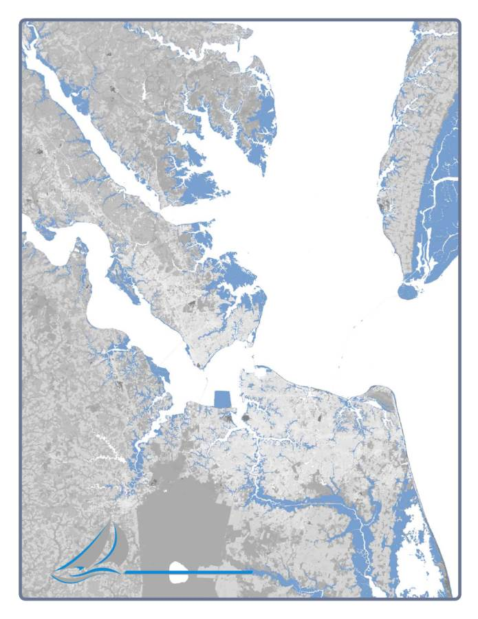
Climate Change in
Hampton Roads
Climate Change in
Hampton Roads
Phase II: Storm Surge Vulnerability and Public Outreach
Phase II: Storm Surge Vulnerability and Public Outreach
June 2011
PEP11-05
PDC
PDC
HAMPTON ROADS
PLANNING DISTRICT COMMISSION

HAMPTON ROADS PLANNING DISTRICT COMMISSION
DWIGHT L. FARMER
EXECUTIVE DIRECTOR/SECRETARY
CHESAPEAKE
POQUOSON
. EUGENE HUNT, JR.
J. RANDALL WHEELER
AMAR DWARKANATH
W
L
*
R
WILLIAM E. HARREL
ES, J
OFF
CLIFTON E. HAY
LA P. KRASN
LL P
*
A N
PORTSMOUTH
E A . WARD
KENNETH L. CHANDLER
* KENNETH I. WRIGHT
FRANKLIN
UN FLEMING
REG McLEMORE
*
J
E
SOUTHAMPTON COUNTY
G
ANITA T. FELTS
* MICHAEL W. JOHNSON
GLOUCESTER COUNTY
G. GARTON
* BRENDA
SUFFOLK
GREGORY WOODARD
* SELENA CUFFEE-GLENN
LINDA T. JOH SON
N
HAMPTON
LIN
MARY BUNTING
SURRY COUNTY
ROSS A. KEARNEY
*
TYRONE W. FRANK
* MOLLY JOSEPH WARD
JOHN M. SEWARD
UNTY
SKEY
IS OF WIGHT CO
VIRGINIA BEACH
W. DOUGLAS CA
* STAN D. CLARK
LE
HARRY E. DIEZEL
R
EY
ROBERT M. DYE
BARBARA M. HENL
JAMES CITY COUNTY
*
LOUIS R. JONES
C. GOODSON
C. MIDDAUGH
* BRUCE
RITA S. BELLITTO
ROBERT
JAMES K. SPORE
JOHN E. UHRI
.
N
NEWPORT NEWS
*
NEIL A. MORGAN WILLIAMSBURG
MCKINLEY L. PRICE
CLYDE A. HAULMAN
SHARON P. SCOTT
JACKSON C. TUTTLE
*
T
NORFOLK
YORK COUNTY
*
JAMES O. McREYNOLDS
THOMAS G. SHEPPERD, JR.
ANTHONY L. BURFOO
*
PAUL D. FRAIM
THOMAS R. SMIGIEL
MARCUS JONES
DR. THERESA W. WHIBLEY
*
EXECUTIVE COMMITTEE MEMBER
PROJECT STAFF
CTOR
JOHN M. CARLOCK
HRPDC DEPUTY EXECUTIVE DIRE
ER
PLANN
ANNER
JIMONTANAE McBRIDE
PRINCIPAL REGIONAL
SARA J. KIDD
SENIOR REGIONAL PL
ANE
BENJAMIN J. McFARL
REGIONAL PLANNER
FRANCES HUGHEY
ADMINISTRATIVE ASSISTANT
BS
ANAGER
ROBERT C. JACO
GENERAL SERVICES MANAGER
MICHAEL R. LONG
ASSISTANT GENERAL SERVICES M
BRIAN MILLER
COMMUNICATIONS DESIGNER
CHRISTOPHER W. VAIGNEUR
REPROGRAPHIC COORDINATOR
C
LIMATE
C
HANGE IN
H
AMPTON
R
OADS
P
HASE
II:
S
TORM
S
URGE
V
ULNERABILITY AND
P
UBLIC
O
UTREACH
This report was funded, in part, by the Virginia Coastal Zone Management Program
at the Virginia Department of Environmental Quality through
Grant # NA09NOS4190163 of the U.S Department of Commerce,
National Oceanic and Atmospheric Administration,
under the Coastal Zone Management Act of 1972, as amended.
The views expressed herein are those of the authors and do not necessarily reflect the views
of the U.S Department of Commerce, NOAA or any of its subagencies.
Federal financial assistance to this project amounted to $40,000,
approximately 50% of the total cost.
Preparation of this report was included in the HRPDC Unified
Planning Work Program for FY 2010, approved by the
Commission at its Executive Committee Meeting of
June 17, 2009 and in the HRPDC Unified
Planning Work Program for FY 2011, approved by the
Commission at its Executive Committee Meeting of
June 16, 2010.
Prepared by the staff of the
Hampton Roads Planning District Commission
JUNE 2011
R
EPORT
D
OCUMENTATION
TITLE:
REPORT DATE
Climate Change in Hampton Roads:
Phase II: Storm Surge Vulnerability and Public Outreach
June 2011
GRANT/SPONSORING AGENCY
DEQ/NOAA/LOCAL FUNDS
AUTHOR:
ORGANIZATION NAME,
Benjamin J. McFarlane
ADDRESS AND TELEPHONE
Hampton Roads Planning
District Commission
723 Woodlake Drive
Chesapeake, Virginia 23320
(757)420-8300
http://www.hrpdcva.gov
ABSTRACT
This report provides a summary of the second year of the Hampton Roads Planning District
Commission’s Climate Change Adaptation project. The report contains eight major sections. The
first section describes sea level rise in Hampton Roads. The second section describes several sea
level rise and flooding vulnerability analysis case studies. The third section describes the various
datasets used in this analysis. The fourth section describes the methodology used for the analysis.
The fifth section provides a brief summary of the results. The sixth section describes the public
outreach efforts HRPDC staff participated in or coordinated during this grant period. The seventh
section describes some adaptation options available for responding to sea level rise, as well as some
planning frameworks that could be used locally and regionally to address climate change in
Hampton Roads. The eighth section summarizes the project and offers some next steps.
ACKNOWLEDGEMENTS
This report was funded, in part, by the Virginia Coastal Zone Management Program at the Virginia
Department of Environmental Quality through Grant #NA09NOS4190163 from the U.S. Department
of Commerce, National Oceanic and Atmospheric Administration, under the Coastal Zone
Management Act of 1972, as amended. The views expressed herein are those of the authors and do
not necessarily reflect the views of the U.S. Department of Commerce, NOAA, or any of its sub-
agencies.
This report was prepared by the Hampton Roads Planning District Commission (HRPDC) staff in
cooperation with the member localities. Preparation of this report was included in the HRPDC
Unified Planning Work Program for Fiscal Year 2010, approved by the Commission at its Executive
Committee Meeting of June 17, 2009, and in the HRPDC Unified Planning Work Program for Fiscal
Year 2011, approved by the Commission at its Executive Committee Meeting of June 16, 2010.
Page | iii
L
IST OF
M
APS
Map 1: Hampton Roads, Virginia ...................................................................................................................................................... 4
Map 2: NOAA Tide Gauges in Hampton Roads that Measure Sea Level Trends ............................................................ 7
Map 3: Example Storm Surge Zones .............................................................................................................................................. 16
Map 4: Example Census Blocks ........................................................................................................................................................ 18
Map 5: Example Business Locations .............................................................................................................................................. 18
Map 6: Example Roads ........................................................................................................................................................................ 19
Map 7: Example Critical Infrastructure ........................................................................................................................................ 19
Map 8: Hampton Roads Storm Surge Inundation Areas........................................................................................................ 27
Map 9: Peninsula Storm Surge Inundation Areas .................................................................................................................... 28
Map 10: Southside Hampton Roads Storm Surge Inundation Areas ............................................................................... 29
Map 11: Chesapeake, Virginia Storm Surge Inundation Areas ........................................................................................... 30
Map 12: Roads and Critical Infrastructure Vulnerable to Storm Surge in Chesapeake, Virginia ......................... 31
Map 13: Businesses Vulnerable to Storm Surge in Chesapeake, Virginia ...................................................................... 31
Map 14: Gloucester County, Virginia Storm Surge Inundation Areas .............................................................................. 32
Map 15: Roads and Critical Infrastructure Vulnerable to Storm Surge in Gloucester County, Virginia ............ 33
Map 16: Businesses Vulnerable to Storm Surge in Gloucester County, Virginia ......................................................... 33
Map 17: Hampton, Virginia Storm Surge Inundation Areas ................................................................................................ 34
Map 18: Roads and Critical Infrastructure Vulnerable to Storm Surge in Hampton, Virginia .............................. 35
Map 19: Businesses Vulnerable to Storm Surge in Hampton, Virginia ........................................................................... 35
Map 20: Isle of Wight County, Virginia Storm Surge Inundation Areas .......................................................................... 36
Map 21: Roads and Critical Infrastructure Vulnerable to Storm Surge in Isle of Wight County, Virginia ........ 37
Map 22: Businesses Vulnerable to Storm Surge in Isle of Wight County, Virginia ..................................................... 37
Map 23: Newport News, Virginia Storm Surge Inundation Areas ..................................................................................... 38
Map 24: Roads and Critical Infrastructure Vulnerable to Storm Surge in Newport News, Virginia ................... 39
Map 25: Businesses Vulnerable to Storm Surge in Newport News, Virginia ................................................................ 39
Map 26: Norfolk, Virginia Storm Surge Inundation Areas .................................................................................................... 40
Map 27: Roads and Critical Infrastructure Vulnerable to Storm Surge in Norfolk, Virginia .................................. 41
Map 28: Businesses Vulnerable to Storm Surge in Norfolk, Virginia ............................................................................... 41
Map 29: Poquoson, Virginia Storm Surge Inundation Areas ............................................................................................... 42
Map 30: Roads and Critical Infrastructure Vulnerable to Storm Surge in Poquoson, Virginia ............................. 43
Map 31: Businesses Vulnerable to Storm Surge in Poquoson, Virginia .......................................................................... 43
Map 32: Portsmouth, Virginia Storm Surge Inundation Areas ........................................................................................... 44
Map 33: Roads and Critical Infrastructure Vulnerable to Storm Surge in Portsmouth, Virginia ......................... 45
Map 34: Businesses Vulnerable to Storm Surge in Portsmouth, Virginia ...................................................................... 45
Map 35: Suffolk, Virginia Storm Surge Inundation Areas ..................................................................................................... 46
Map 36: Roads and Critical Infrastructure Vulnerable to Storm Surge in Suffolk, Virginia ................................... 47
Map 37: Businesses Vulnerable to Storm Surge in Suffolk, Virginia ................................................................................ 47
Map 38: Surry County, Virginia Storm Surge Inundation Areas ........................................................................................ 48
Map 39: Roads and Critical Infrastructure Vulnerable to Storm Surge in Surry County, Virginia ...................... 49
Map 40: Businesses Vulnerable to Storm Surge in Surry County, Virginia ................................................................... 49
Map 41: Virginia Beach, Virginia Storm Surge Inundation Areas ...................................................................................... 50
Map 42: Roads and Critical Infrastructure Vulnerable to Storm Surge in Virginia Beach, Virginia .................... 51
Map 43: Businesses Vulnerable to Storm Surge in Virginia Beach, Virginia ................................................................. 51
Map 44: York County, Virginia Storm Surge Inundation Areas .......................................................................................... 52
Map 45: Roads and Critical Infrastructure Vulnerable to Storm Surge in York County, Virginia ........................ 53
Map 46: Businesses Vulnerable to Storm Surge in York County, Virginia ..................................................................... 53

This page intentionally left blank.

Page | 1
E
XECUTIVE
S
UMMARY
The Hampton Roads Planning District Commission is currently engaged in a three-year focal area
grant project from the Virginia Coastal Zone Management Program on Climate Change Adaptation.
This report represents the work from the second year of that project. The first year focused on
researching the types of impacts that the Hampton Roads region could potentially experience from
climate change and on engaging and educating local government staffs about those impacts. The
focus during the second year shifted to assessing the extent of those impacts with a focus on sea
level rise and flooding, along with engaging the public through a variety of means on those issues.
HRPDC staff presented to several governmental and non-governmental organizations and groups
over the course of the grant period, including formal presentations, informal discussions, and
panels.
The geographic analysis in this report attempted to estimate the region’s exposure to flooding and
sea level rise by collecting and using data for storm surge zones, population, critical facilities,
transportation infrastructure, and businesses. The results indicate that Hampton Roads is
significantly vulnerable to flooding during storms as well as sea level rise, with the Cities of
Chesapeake, Hampton, Norfolk, Poquoson, Portsmouth, Virginia Beach and Gloucester and York
Counties being particularly vulnerable. This vulnerability to existing hazards reinforces the
perception that sea level rise is a potential threat to the region. Educating and engaging the public,
incorporating sea level rise into current planning efforts, and developing a regional plan for
considering adaptation options are three important steps Hampton Roads should take in the near
future to meet this challenge.
Page | 2
I
NTRODUCTION
The Hampton Roads Planning District Commission has been working on a three-year Sustainable
Coastal Communities Focal Area Grant from Virginia’s Coastal Zone Management Program (VCZMP)
focused on Climate Change Adaptation. The VCZMP identifies focal areas to focus multiple years of
funding to help develop long-term programs. The first year of the HRPDC’s Climate Change
Adaptation project focused on identifying the broad impacts the region potentially faced as a result
of climate change and engaging local governments in identifying vulnerabilities and adaptation
options. Through that process as well as cooperative efforts with other researchers and
stakeholders, sea level rise and storm surge flooding were identified as two of the most pressing
concerns related to climate change. The Hampton Roads region is already particularly vulnerable to
storm surges from hurricanes and nor’easters as a result of its intensive coastal development and
relatively flat topography. While its location along the Mid-Atlantic coast protects it from the brunt
of many tropical storms, when storms strike the area the effects can be quite damaging and
incapacitating. Sea level rise will increase the threat from storm-induced flooding in addition to
permanently inundating some areas. Accelerated rates of sea level rise due to climate change pose
an even greater threat to the region.
Given that storm surges and sea level rise pose significant threats to both the natural and built
environments in Hampton Roads, it is important to quantify the extent of those threats to create
effective tools for mitigating those threats or adapting to them. Understanding how much of a
threat sea level rise and storm surge are can also help decision makers calculate the potential costs
of those hazards in terms of losses, while also determining the benefits of various mitigation and
adaptation measures relative to their costs. The goal of this phase of the project was to develop a
way to quantify the regional impacts of sea level rise, to the economy as well as the built and
natural environments. Developing a geographic information systems (GIS) tool to measure impacts
from sea level rise that could be replicated by individual localities in Hampton Roads was a primary
consideration. The outputs from this tool development and use would then be used to inform
research and discussion concerning adaptation and mitigation policies. At the same time, work
would continue on the development of a regional framework for climate change adaptation.
The creation of a tool to estimate the impacts of sea level rise is an important step in developing
effective polices that cope with climate change. One outcome of using such a tool is the creation of
vulnerability or exposure maps that assess infrastructure, population, or other important

Page | 3
conditions within areas at risk from flooding or inundation. Identifying which areas are threatened
and how much is affected can allow for the effective distribution of resources to various adaptation
measures. These maps and data summaries, using high‐resolution elevation, land use/land cover,
demographic, and economic data, are useful for both short‐term and long‐term land‐use,
infrastructure, and hazard mitigation planning efforts (Gesch, Gutierrez and Gill 2009). The
availability of more precise data and advanced geographic information systems capabilities allows
for extensive spatial analysis and modeling of these impacts. Estimates of adaptation costs and the
scale of political decisions required when selecting appropriate adaptation measures make accurate
assessments of vulnerability critical. Some measures, such as current hazard mitigation planning,
are “win‐win” or “no regrets” decisions – they provide benefits now for current issues while also
providing some mitigation or adaption benefits for sea level rise (NOAA Coastal Services Center
2010). Other measures, such as seawalls or dikes, can be very expensive (Koch 2010). Given the
uncertainties involved in planning for sea level rise, the following analysis should be taken as a
first‐take general estimate of the region’s current vulnerability to storm‐surge and potential
vulnerability to sea level rise. This report should be seen as part of the process of discussing what
options are appropriate and cost‐effective for adapting Hampton Roads to climate change and sea
level rise.
This report consists of eight sections as well as appendices containing supporting documents. The
first section describes sea level rise in Hampton Roads. The second section describes several case
studies of vulnerability analyses conducted by others that measure the threats of storm‐surge
flooding and/or sea level rise. The third section describes the various datasets used in this analysis.
The fourth section describes the methodology used in the analysis. The fifth section gives an
overview of the results, including tables and maps. The sixth section describes this grant period’s
public outreach efforts and partnerships with other organizations. The seventh section describes
various policy options that have been identified for adapting the region to sea level rise and storm
surge. The final section provides an overview of the planned steps to be taken during the final year
of this focal area project.
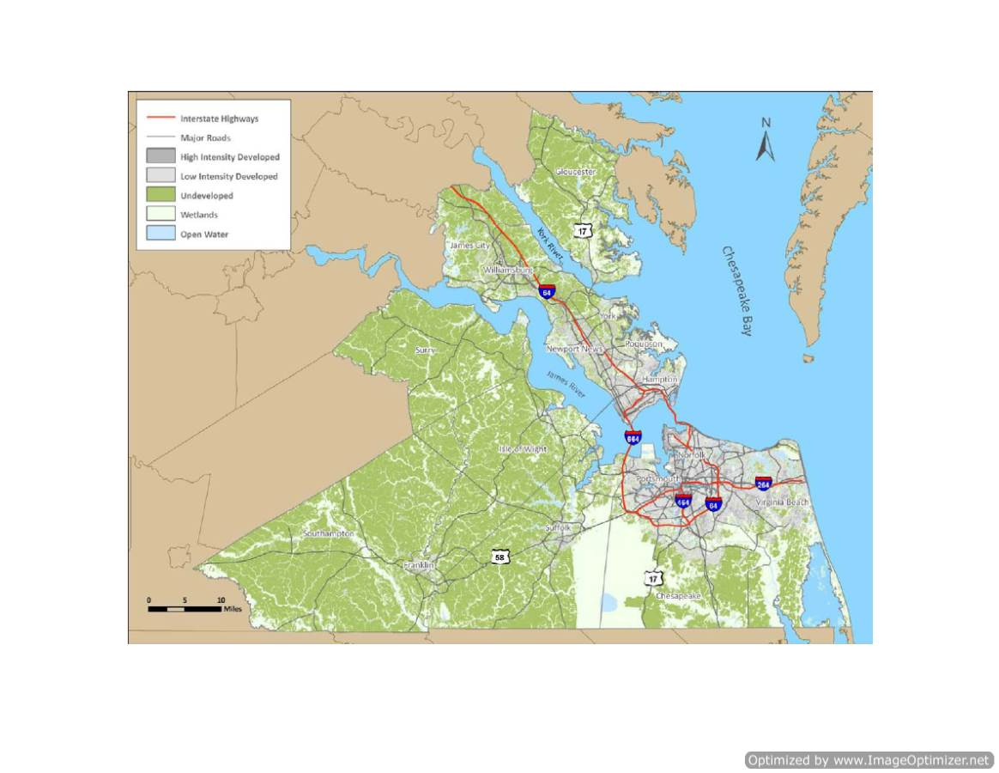
Page | 4
Map 1: Hampton Roads, Virginia
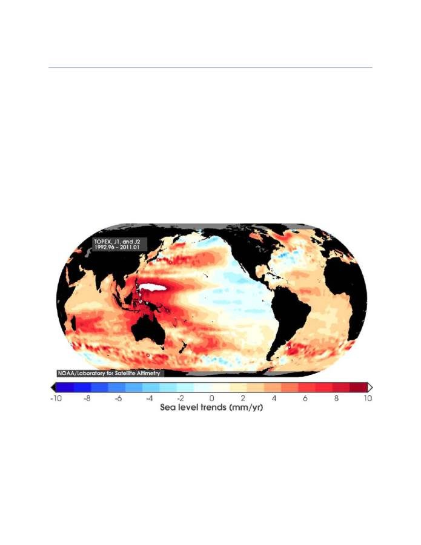
Page | 5
S
EA
L
EVEL
R
ISE IN
H
AMPTON
R
OADS
Global sea level is determined by the volume and mass of water in the world’s oceans. Sea level rise
occurs when the oceans warm or ice melts, bringing more water into the oceans. Sea level rise
caused by warming water or thermal expansion is referred to as steric sea level rise, while sea level
rise caused by melting snow and ice is called eustatic sea level rise. The combination of steric and
eustatic sea level rise is referred to as absolute sea level rise. Absolute sea level rise does not
include local land movements. Additionally, while it is often represented as a global average,
absolute sea level rise varies from place to place as a result of differences in wind patterns, ocean
currents, and gravitational forces. This variation is shown in the figure below.
Figure 1: Absolute Sea Level Trends from Satellite Radar Altimeters, 1992-2011
(NOAA Laboratory for Satellite Altimetry 2011)

Page | 6
Sea level rise experienced at the local level is referred to as relative sea level rise, since it is
measured relative to a fixed point on land, usually by a tide gauge (Boon, Brubaker and Forrest
2010). Measuring sea level rise in this manner incorporates any vertical change in land, either
subsidence (sinking) or uplift (rising).
Hampton Roads is more vulnerable to sea level rise than most regions because it is subsiding due to
a combination of geological processes, such as isostatic rebound, faulting and consolidation of
sediments in fill structures such as the Chesapeake Bay Impact Crater, and sediment compression
caused by groundwater withdrawals (Boon, Brubaker and Forrest 2010). However, the relative
impact of these individual processes on the region’s rate of subsidence is not well understood. The
overall effect of these processes is that the region is sinking at the same time the sea is rising, so
even in the absence of any global sea level rise, Hampton Roads would still be experiencing rising
sea levels. In 2010, the Virginia Institute of Marine Science and U.S. Army Corps of Engineers
published a study on sea level trends in the Chesapeake Bay, with a focus on identifying the
amounts of absolute and relative sea level rise occurring in the region (Boon, Brubaker and Forrest
2010). This study analyzed sea level trends for ten tide gauges in the Chesapeake Bay from
Maryland to Virginia, using linear regression to remove seasonal and decadal patterns to determine
long-term trends. This analysis found that absolute sea level rise (sea level rise caused by an
increase in water volume and mass) in the Chesapeake Bay from 1976 to 2007 was approximately
1.8mm/year, and that subsidence rates ranged from 1.3mm/year to 4.0mm/year at different sites
around the Bay. On average, the study concluded that subsidence accounts for 53% of the relative
sea level rise measured in the Chesapeake Bay. The report did not identify any acceleration in sea
level rise in the Chesapeake Bay. However, subsidence makes the areas surrounding the
Chesapeake Bay particularly vulnerable to any absolute sea level rise, so continued research and
monitoring is recommended.
Long-term sea level trend data for the Hampton Roads region are available from five National
Oceanic and Atmospheric Administration (NOAA) tide gauges, three of which remain active. These
gauges are located at the Chesapeake Bay Bridge-Tunnel, Gloucester Point, Kiptopeke, Portsmouth
along the Southern Branch Elizabeth River, and Sewell’s Point in Norfolk. These locations are
shown on Map 2 (page 7). Continuous NOAA tide measurements in Hampton Roads began in 1927
at the Sewell’s Point station, with additional stations established in 1935 (Portsmouth), 1950
(Gloucester Point), 1951 (Kiptopeke), and 1975 (Chesapeake Bay Bridge-Tunnel). Longer
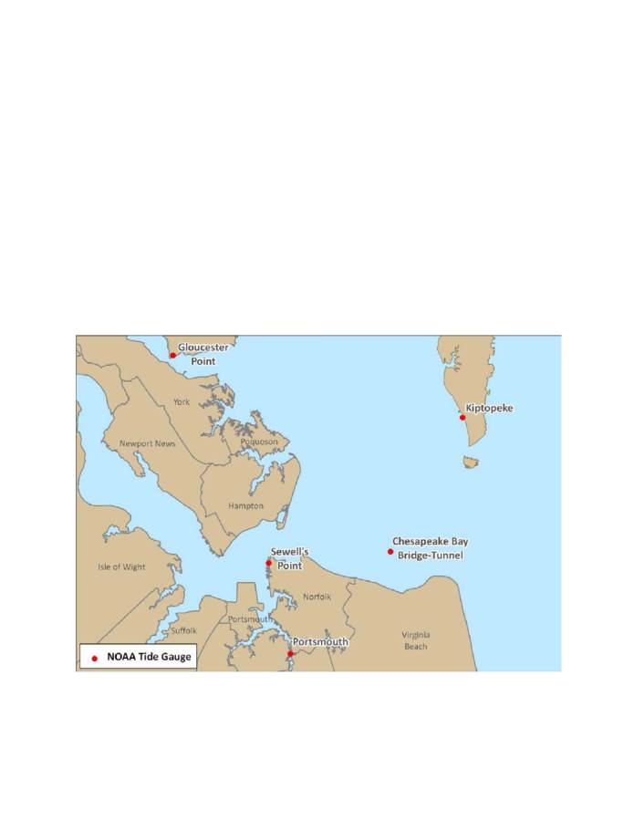
Page | 7
observation periods provide clearer signals of sea level trends because regular seasonal, annual,
and decadal variations can be identified and removed. Observed sea level trends (with a 95%
confidence interval) at these stations range from 3.48 ± 0.42 mm/year at the Kiptopeke station to
6.06 ± 1.14 mm/year at the Chesapeake Bay Bridge-Tunnel. These ranges represent local or relative
sea level rise rates, which include both absolute sea level rise and subsidence. The Chesapeake Bay
Bridge-Tunnel, Kiptopeke, and Sewell’s Point trends are through 2006. The Gloucester Point and
Portsmouth stations were deactivated in 2003 and 1987, respectively. Long-term trends for these
stations are shown in the following figures from NOAA’s Tides & Currents website (National
Oceanic and Atmospheric Administration 2011).
Map 2: NOAA Tide Gauges in Hampton Roads that Measure Sea Level Trends
(National Oceanic and Atmospheric Administration 2011)
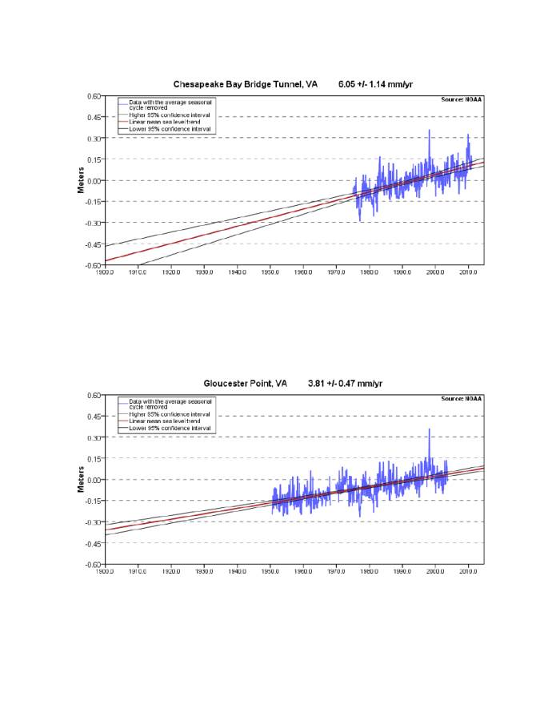
Page | 8
Figure 2: Mean Sea Level Trend, Chesapeake Bay Bridge-Tunnel Station (1975 – 2006)
The long-term mean sea level trend at the Chesapeake Bay Bridge-Tunnel tide gauge from 1975 to 2006 was
6.06 ± 1.14 mm/yr. The observed rate equals a rate of 1.98 feet over 100 years (National Oceanic and
Atmospheric Administration 2011).
Figure 3: Mean Sea Level Trend, Gloucester Point Station (1950– 2003)
The long-term mean sea level trend at the Gloucester Point tide gauge from 1950 to 2003 was 3.81 ± 0.47
mm/yr. The observed rate equals a rate of 1.25 feet over 100 years (National Oceanic and Atmospheric
Administration 2011).
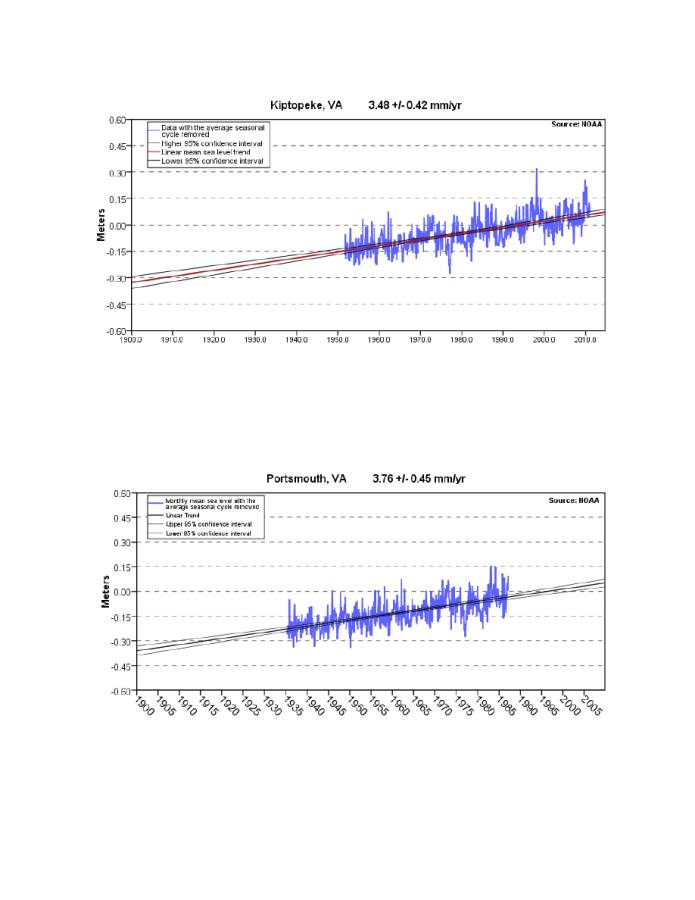
Page | 9
Figure 4: Mean Sea Level Trend, Kiptopeke Station (1951 – 2006)
The long-term mean sea level trend at the Kiptopeke tide gauge from 1951 to 2006 was 3.48 ± 0.42 mm/yr.
The observed rate equals a rate of 1.14 feet over 100 years (National Oceanic and Atmospheric
Administration 2011).
Figure 5: Mean Sea Level Trend, Portsmouth Station (1935 – 1987)
The long-term mean sea level trend at the Portsmouth tide gauge from 1935 to 1987 was 3.76 ± 0.45 mm/yr.
The observed rate equals a rate of 1.23 feet over 100 years (National Oceanic and Atmospheric
Administration 2011).
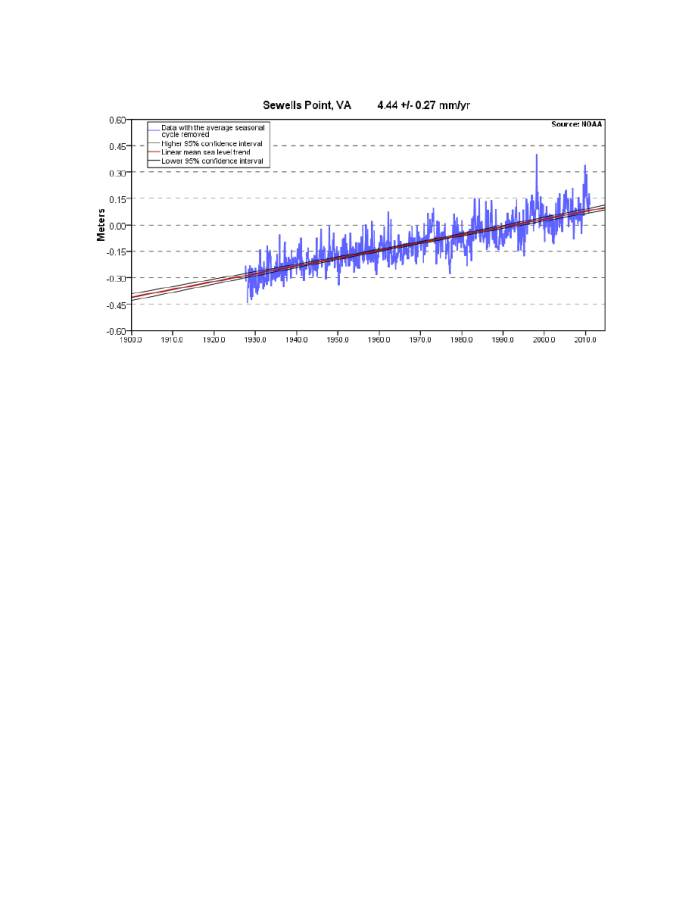
Page | 10
Figure 6: Mean Sea Level Trend, Sewell's Point Station (1927 – 2006)
The long-term mean sea level trend at the Sewell’s Point tide gauge from 1927 to 2006 was 4.44 ± 0.27
mm/yr. The observed rate equals a rate of 1.46 feet over 100 years (National Oceanic and Atmospheric
Administration 2011).
Unfortunately, while historical trends of sea level rise over the 20
th
century in the Chesapeake Bay
are documented by actual observations, planning for sea level rise over the next century involves a
great deal more uncertainty, for both absolute sea level rise and relative or local sea level rise. In
this respect, the uncertainty concerns the extent of sea level rise, not whether or not it is occurring.
This uncertainty results from several factors.
First, projecting absolute future sea level rise involves making a number of assumptions. For global
sea level rise, scenarios of different greenhouse gas emissions levels (which include assumptions
about population growth and distribution, technology use, economic growth, and other
components) are used as inputs to models that then calculate changes to sea level, global average
temperatures, precipitation levels, and others. Instead of interpreting these as predictions, it is
more appropriate to understand them as projections of possible futures. In this way, the models can
be used to test different behaviors, trends, or policies and their effects on the global environment.
Scenario planning is used in many different fields, including planning and business, and is very
Page | 11
useful when future actions are likely to have a great impact on future developments. In the cases of
climate change and sea level rise, the United Nations Intergovernmental Panel on Climate Change
(IPCC) and others have noted that while some degree of climate change is inevitable, the full extent
will depend on choices made and actions taken in the future (Intergovernmental Panel on Climate
Change 2007).
Second, climate change and sea level rise projections rely on the use of models that have varying
degrees of precision and understanding of the processes being modeled. Some things, such as
thermal expansion of water, are relatively well understood, while others, such as ice flow processes,
are less so. For this reason, many projections of climate change and its impacts are given as both
best estimates and as ranges for each scenario. These ranges account for the uncertainties both in
data and in modeling long-range processes. However, they are still projections that rely on
assumptions concerning future behavior. In addition, the IPCC’s projected levels of sea level rise,
shown in Figure 6 below, only account for global average sea level rise, which does not account for
local variations in sea level rise resulting from winds, vertical shifts in land, or ocean currents.
Figure 7: IPCC Temperature and Sea Level Rise Projections by 2099
Temperature Change
(°C at 2090-2099 relative to 1980-
1999)
Sea level rise
(m at 2090-2099 relative to 1980-
1999)
Case
Best estimate
Likely range
(>66%)
Model-based range excluding future
rapid dynamical changes in ice flow
Constant year 2000
concentrations
0.6
0.3 – 0.9
Not available
B1 Scenario
1.8
1.1 – 2.9
0.18 – 0.38
A1T Scenario
2.4
1.4 – 3.8
0.20 – 0.45
B2 Scenario
2.4
1.4 – 3.8
0.20 – 0.43
A1B Scenario
2.8
1.7 – 4.4
0.21 – 0.48
A2 Scenario
3.4
2.0 – 5.4
0.23 – 0.51
A1F1 Scenario
4.0
2.4 – 6.4
0.26 – 0.59
Source: IPCC Climate Change 2007: Synthesis Report (Intergovernmental Panel on Climate Change 2007)
More observations and research are leading to better understanding of these processes, so the
accuracy of the projections should improve. The United States Global Change Research Program
published a report in 2009 that included more recent research results than the IPCC report. Their
summary stated that “the average estimates under higher emissions scenarios are for sea-level rise
between 3 and 4 feet by the end of this century,” with even higher amounts possible (Karl, Melillo
and Peterson 2009). These numbers only account for absolute sea level rise. The high rate of

Page | 12
subsidence in Hampton Roads will cause relative sea level rise to be even higher than the global
average. However, there is also a great deal of uncertainty regarding the extent and rate of
subsidence in the region, as its causes are poorly quantified and understood.
These measurements of past sea level rise and projections of future sea level rise have several
implications for Hampton Roads localities. The long-term trend of sea level rise measured at several
locations across the region provides a reasonable baseline rate of sea level rise to include while
planning for the future, whether in identifying areas for future development, constructing public
works and infrastructure, or land conservation and natural resources protection. Past observations
of sea level rise in Hampton Roads indicate a long-term trend of approximately one to two feet of
relative sea level rise every one hundred years. Studies indicate that the global rate of absolute sea
level rise will increase. Therefore, local sea level rise in Hampton Roads over the next one hundred
years is likely to exceed the 20
th
century rate. At minimum, for long-term planning purposes the
region should assume historical rates of sea level rise will continue. However, the region should
regularly revisit this assumption as new observations and research are made available.

Page | 13
C
ASE
S
TUDIES
Several previous studies have analyzed how vulnerable communities are to storm surge and sea
level rise. Three of these studies were used as examples for developing the methodology used in
this report’s analysis.
H
AMPTON
R
OADS
,
V
IRGINIA
The first of these studies was conducted by a team from Pennsylvania State University and focused
on the Hampton Roads region. This study assessed the area’s vulnerability to storms and how sea
level rise would increase that vulnerability, with vulnerability defined as a function of exposure,
sensitivity, and adaptive capacity (Kleinosky, Yarnal and Fisher 2007). Their research combined an
assessment of the region’s exposure to storm surge and sea level rise with analysis of the region’s
sensitivity to and ability to handle natural hazards, based on socioeconomic characteristics such as
poverty and age. The study relied on previous work that identified young, old, and poor populations
as having less capacity to adapt to change or respond to hazards. Exposure was measured using the
Sea, Lake, and Overland Surges from Hurricanes (SLOSH) model, using present conditions as the
baseline and adding sea level rise of 30cm (0.98ft), 60cm (1.97ft), and 90cm (2.95ft). Sensitivity and
adaptive capacity were measured using data from the 2000 U.S. Census. The census blocks with the
highest vulnerability to storm surge and sea level rise were located in Newport News, Norfolk, and
Portsmouth, with blocks in Chesapeake, Hampton, and Virginia Beach also having significant
vulnerability. The study also looked at how future population growth and movement could affect
vulnerability, as well as the exposure of the region’s critical infrastructure to storm surge and sea
level rise. This study provides a model for HRPDC’s current work as well as a baseline for
comparing results.
L
ONG
I
SLAND
S
OUND
The Long Island Sound of Connecticut and New York was the first area studied by the Coastal
Resilience Project (The Nature Conservancy 2010), an effort headed by The Nature Conservancy
with the goal of studying the impacts of flooding and sea level rise in regions with significant
natural and infrastructure resources at risk. The study measured the vulnerability of Long Island,
New York to both sea level rise and storm surge (The Nature Conservancy 2010). The study
included a focus on the vulnerability of natural resources and their usefulness as protection from
flooding. This analysis used elevation data combined with sea level rise scenarios developed by
Columbia University’s Center for Climate Systems Research to assess which areas might be

Page | 14
inundated from sea level rise. Ecological indicators used to measure vulnerability included tidal
marshes and barrier islands, while population, infrastructure, land cover, and emergency facilities
were used as socioeconomic indicators. The analysis also looked at potential economic losses from
flooding using the HAZUS-MH model, developed by the Federal Emergency Management Agency to
estimate vulnerability to natural hazards. The study found that the region was significantly at risk
from sea level rise and storm surge flooding, including both natural resources and developed areas.
In addition to the vulnerability analysis, the project also surveyed available options for adapting to
sea level rise and resulted in the creation of the Future Scenarios Mapper, an interactive viewer that
allows the public to compare different scenarios of sea level rise and flooding with various social,
economic, infrastructure, and environmental data layers.
1
This viewer is an excellent example of
making flooding and sea level rise research and analysis easily accessible to the public.
M
ID
-A
TLANTIC
C
OAST
,
U
NITED
S
TATES
The U.S. Climate Change Science Program published a series of reports on climate change and its
impacts on the United States, including one in January 2009 titled Coastal Sensitivity to Sea-Level
Rise: A Focus on the Mid-Atlantic Region (Climate Change Science Program 2009). One of the
chapters in that report, “Population, land use, and infrastructure,” looked at the available data
needed for a comprehensive assessment of coastal areas’ vulnerability to sea level rise (Gill, et al.
2009). Utilizing geographic information systems (GIS), the authors modeled the vulnerability of
Mid-Atlantic communities and watersheds to sea level rise. Their analysis encompassed population
(Census data), land use/land cover (National Land Cover Dataset), and transportation
infrastructure (U.S. Department of Transportation). The authors created both low and high
estimates of vulnerability to reflect the uncertainty in the available elevation data, which were
typically U.S. Geological Survey (USGS) Digital Elevations Models (DEMs). The analysis covered the
states of Delaware, Maryland, New Jersey, New York, North Carolina, Pennsylvania, and Virginia as
well as the District of Columbia. The analysis was also conducted at the watershed level and
included the Albemarle Sound, Atlantic Ocean, Chesapeake Bay, Delaware Bay, Delaware River,
Long Island Sound, Pamlico Sound, Peconic Bay, Potomac River, and Raritan Bay watersheds. In
addition to incorporating low and high estimates resulting from elevation uncertainty, the analysis
also modeled several distributions of population within census blocks, the unit at which population
data was available, to account for the uncertainty in knowing where residents live within those
blocks. These included a uniform distribution and other distributions excluding various
1
http://lis.coastalresilience.org/lis.html

Page | 15
percentages of the lowest-lying areas within each block (e.g. the population is evenly distributed
within the highest, in elevation, fifty percent of the block). This analysis builds on extensive work
analyzing available elevation data (Titus and Wang 2008).
NOAA
C
OASTAL
C
OUNTY
S
NAPSHOTS
While not specifically addressing sea level rise, NOAA’s Coastal County Snapshots, provided through
the Coastal Services Center (CSC), provide a very quick and simple way of identifying vulnerabilities
to flooding in coastal areas (NOAA Coastal Services Center n.d.). The CSC produces two types of
snapshots, Flood Exposure Snapshots and Ocean and Great Lakes Jobs Snapshots. These brief
reports utilize data from a number of sources, including the Federal Emergency Management
Agency, the 2000 U.S. Census, and NOAA to assess the physical, natural, and economic vulnerability
of communities to coastal flooding. The Flood Exposure Snapshots analyze population and critical
facilities within FEMA 100-year floodplains. The reports also identify high-risk populations (the
population over 65 and the population in poverty) as well as the amount of land developed within
the floodplain. For example, the Flood Exposure Snapshot for Virginia Beach, Virginia identifies
19% of the total population, or 78,834 residents, living inside the floodplain, including 23% of the
city’s elderly population (8,086 residents) and 14% of the city’s low-income population (3,933
residents) (NOAA Coastal Services Center n.d.). Approximately 4% of the city’s critical facilities and
11% of its road miles are in the flood plain, and 80 acres of floodplain were converted to
development between 2001 and 2006. The Ocean and Great Lakes Jobs Snapshots analyzes
employment data to identify the number of employees in ocean jobs, their total wages, and the
amount of goods and services they provide, as well as the total percentage of ocean jobs in the
workforce and ocean-related employment trends over time. In Virginia Beach, there were 22,448
employees in ocean-related jobs making a total of $334 million in wages and providing $668 million
in goods and services in 2008 (NOAA Coastal Services Center n.d.). Nearly all of these jobs are
related to tourism and recreation. In Hampton Roads, both types of snapshots are available for
Chesapeake, Gloucester, Hampton, Isle of Wight, Newport News, Norfolk, Poquoson, Portsmouth,
Virginia Beach, and York. Ocean and Great Lakes Jobs Snapshots are also available for Franklin,
James City, Suffolk, Surry, and Williamsburg.
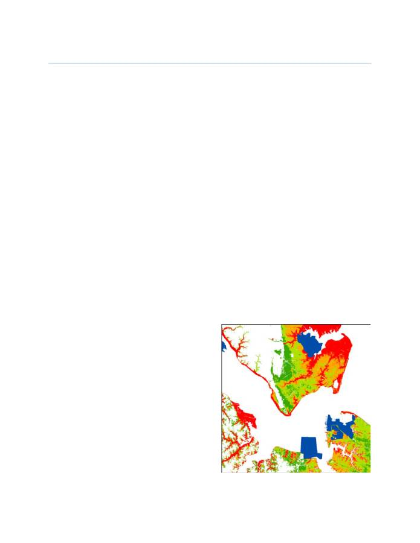
Page | 16
D
ATA
The data used in this vulnerability analysis came from multiple sources and was modified and
analyzed using geographic information systems (GIS). The datasets used were selected based on
need, availability, consistency, and processing capacity. The goal of this analysis, to estimate the
vulnerability of the Hampton Roads region to storm surge and sea level rise, required identifying
zones throughout the region that are subject to storm surge or would be subject to sea level rise,
and then assessing what assets, resources, or population existed within those zones. The goal of the
storm surge vulnerability analysis was to estimate the quantity of residents, employees, businesses,
roads, and critical infrastructure in various storm surge zones. The goal of the next stage, a sea level
rise vulnerability analysis, will be to estimate the quantity of residents, employees, businesses,
roads, critical infrastructure, and natural resources in areas that could potentially be inundated by
various amounts of sea level rise.
O
RIGINAL
D
ATA
S
OURCES
Five data categories were identified for this study: storm surge, population, business, roads, and
critical infrastructure. The process for each category required identifying data sources, obtaining
datasets, and extracting the necessary data from each dataset to form a working dataset.
Descriptions of the various data used in this analysis are given below.
Storm Surge
Storm surge is rise in water resulting from low
atmospheric pressure and high winds (J. Boon
2003). The storm surge zones used here were the
result of a cooperative effort, the Virginia
Hurricane Evacuation Study (VHES), between the
U.S. Army Corps of Engineers, the Federal
Emergency Management Agency, the Virginia
Department of Emergency Management, and
Hampton Roads local governments (Virginia
Department of Emergency Management n.d.). Their
analysis used the Sea, Lake, and Overland Surges
from Hurricanes (SLOSH) model to determine the
maximum storm tide elevations from Category 1, 2,
Map 3: Example Storm Surge Zones

Page | 17
3, and 4 hurricanes, which were then used with locality elevation data to delineate flood hazard
areas. This output is the result of many different model runs, each representing a single hurricane
track and wind speed, with the hazard areas representing a “maximum of the maximum,” as if a
given category of storm were striking the entire region all at once from every modeled angle. The
model does not include precipitation, which can have a major impact on flooding. As such, these
zones represent a so-called “worst case scenario” of wind-driven flooding only and are not useful
for predicting the storm surge or flooding during a specific hurricane. However, the maps are useful
for general planning purposes and vulnerability assessments such as this study (Federal Emergency
Management Agency 2010). The elevation data used for delineation of flood hazard areas depended
on the locality; several localities in Hampton Roads provided their own elevation data, while for the
rest of the region the study used U.S. Geological Survey (USGS) topographic data from the National
Elevation Dataset (NED). The NED topography used in the study was not as precise as the locality-
provided data.
Since the goal of the Virginia Hurricane Evacuation Study was to identify vulnerable areas in coastal
communities that would have to be evacuated during storm events, the Virginia Department of
Emergency Management confined the study area to those communities that were deemed to be
vulnerable to storm surge from hurricanes. Franklin, James City County, Southampton County, and
Williamsburg were not included in the study area. Because of this, those four localities, while in the
Hampton Roads Planning District, were not included in this analysis of storm surge vulnerability.
While the datasets developed for the VHES appear to cover parts of those four localities that is most
likely the result of slight differences in boundary files used for delineating the study area, and not
an indication that those localities were partially studied. A future modeling of storm surge in
Hampton Roads may include these localities. As high-resolution elevation data is not available for
the entire Hampton Roads Planning District, storm surge zones are also used here as very rough
approximations of areas vulnerable to sea level rise. An overlay analysis of Category 1 storm surge
areas and available elevation data from the National Elevation Dataset shows that nearly all of the
Category 1 storm surge area is lower than two meters above mean sea level. Based on historic
trends, sea level rise in Hampton Roads would be between one and two feet by 2100. Incorporating
higher rates of sea level rise due to global warming could result in more than five feet of sea level
rise over the same time period (Pyke, et al. 2008). In this case, the land in Category 1 storm surge
zones can be used as a proxy for areas that could be inundated due to sea level rise by 2100. An
analysis using available elevation datasets will be included in the next phase of the project.

Page | 18
Population
The population estimates for this analysis were
developed using block-level data from the 2010
U.S. Census, using total population. The 2010
redistricting data distributed by the U.S. Census
Bureau, upon which this analysis is based,
contained a significant error in the City of Norfolk
(Hoyer, Census error inflates count of Norfolk
neighborhood 2011), where the population of
one block, consisting of over 19,000 residents,
was included in that of another block (Hoyer,
Census Bureau admits goof in Norfolk population
figures 2011). This error was corrected manually
based on input from Norfolk city staff.
2
Census
data is assigned to geographic areas, so
populations are represented as groups living
within a given area and not as individuals living
at specific points.
Businesses
Business data, including locations, types, and
numbers of employed, was obtained using ESRI’s
Business Analyst extension for the ArcGIS
software suite (ESRI 2011). Each business is
included in the dataset as a specific geographic
location using longitude and latitude coordinates.
Along with its location, the data includes such
characteristics as the business name, address, and
classification, using both the Standard Industrial Classification (SIC) and North American Industry
Classification System (NAICS). For this analysis, the important information for each business was its
location and number of employees.
2
Specifically, the population of block 51710 0038.00 1000, in the West Ghent neighborhood, was reduced
from 19,352 to 73, and the population of block 51710 0009.02 1044, within Norfolk Naval Base, was
increased from 0 to 19,279. The technical documentation for this change from the Census Bureau is attached
in Appendix A.
Map 4: Example Census Blocks
Map 5: Example Business Locations
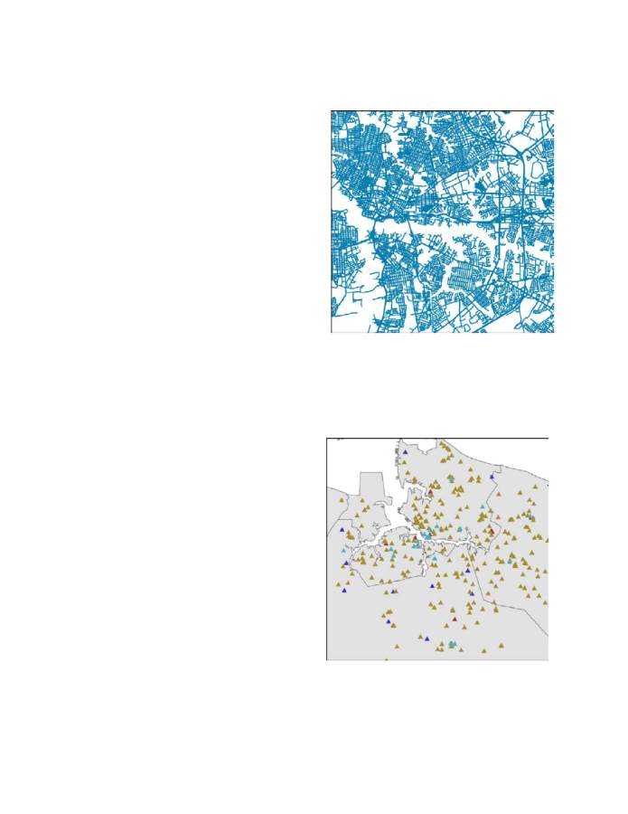
Page | 19
Roads
The roads dataset used in this analysis was the
Virginia Geographic Information Network (VGIN)
road centerline database, distributed in winter
2010, which includes addresses, road names, route
numbers, classifications, and other information.
The dataset is a “seamless digital road centerline
file”, jointly maintained by VGIN and localities
(Virginia Information Technologies Agency 2007).
This analysis required location, length, and
classification (e.g. interstate, urban, collector, etc.)
information. This analysis did not incorporate the
number of lanes on a road, only its linear length.
Additional information regarding this data was
obtained from VGIN’s Regional Road Centerline
Supplemental Information Summer 2008 Release.
Critical Infrastructure
Critical infrastructure data was obtained from the
Federal Emergency Management Agency’s
(FEMA) Hazards U.S. Multi-Hazard (HAZUS-MH)
software and data package. This software
provides the methodology and data to “estimate
potential losses from earthquakes, hurricane
winds,
and
floods”
(Federal
Emergency
Management Agency 2010). Storm surge is not yet
included in the HAZUS-MH software, so only the
critical infrastructure data was used. The critical
infrastructure identified for this study included
schools (including public and private schools as
well as daycares and similar facilities), care
Map 7: Example Critical Infrastructure
Map 6: Example Roads
Page | 20
facilities, emergency operations centers, police stations, and fire stations. The only information
required for this analysis was the facility’s type and its location. This data was obtained from the
most recent software release, HAZUS-MH MR-5, which was released in December 2010.
D
ATA
N
OTES
Analyses are limited by the quality of the data and processing capacity available, which leads to
results that are dependent on assumptions. In general, these limitations include the age of the
datasets, incompleteness, inaccuracies, and imprecision. VDEM’s storm surge zones are dependent
on the SLOSH model, which is accurate within ± 20% of the stated water elevation; the zones also
use various land elevations with different degrees of accuracy.
3
Population data from the Census is
only given at the block level; the exact location of residents within the blocks is not released.
Additionally, Census data is dependent on returns, so areas having low response rates affect the
data’s overall accuracy. The business data used in this analysis is similarly dependent on the
various data collection methods used regarding where businesses are and how many people they
employ. Employment numbers are not always disclosed for various reasons, such as national
security. VGIN’s road network data relies on localities to collect and report their data, so it is only as
accurate as the original source data. In addition, this analysis assumes that all roads are at grade
and does not account for raised highways or overpasses. FEMA’s HAZUS data is similarly limited.
Because of these limitations, the results of this analysis should be taken as estimates for general
planning purposes and not as predictions of actual damages or population affected during storm
events. The goal in this analysis is to provide a general idea of which areas in Hampton Roads are
vulnerable to storm surge flooding and to assess the degree of vulnerability.
3
Paul B. Moye (Norfolk District, USACE), e-mail, April27, 2010
Page | 21
M
ETHODOLOGY
The general methodology used for this analysis was a spatial overlay, where one layer is used to
extract a subset of another layer based on geographic overlap. The data from this subset is then
aggregated. A separate analysis was conducted for each dataset (population, business, roads, and
critical infrastructure); the specific steps used for each of these analyses depended on the type of
data (line, polygon, point) and any other limiting characteristics. The analysis methodology is in
part based on a generalized version of that found in the Coastal Inundation Mapping Guidebook
(NOAA Coastal Services Center 2009), which prescribes four steps: obtaining and preparing
elevation data, preparing water levels, mapping inundation, and visualizing inundation. This
analysis uses storm surge zones generated by another study (the 2007 Virginia Hurricane
Evacuation Study) which already used storm surge model results and elevation data to produce
storm surge flooding maps. As mentioned previously, the areas vulnerable to Category 1 storm
surges are also vulnerable to sea level rise. A future analysis will focus specifically on sea level rise
instead of using storm surge zones to measure current vulnerability and as a proxy for future
vulnerability. However, the analysis used here and for sea level rise in the next phase will follow the
same four basic steps, described below.
Figure 8: Vulnerability Analysis Steps
Step 1: Identify Analysis
Scenarios
The first step in this analysis is to define the scenarios by which to
measure an area’s vulnerability, such as an increment of sea level rise or
a storm category. For this analysis, the scenarios selected were Category
1, 2, 3, and 4 hurricanes.
Step 2: Develop Vulnerability
Areas
Once the scenarios are identified, the areas affected must be identified,
either using a storm model like SLOSH or using elevation data and water
levels.
Step 3: Identify Assets to
Analyze
The next step is to select which assets or other indicators, such as
infrastructure or land use, need to be analyzed. For this analysis, four
asset groups were selected: population, businesses, roads, and critical
facilities.
Step 4: Overlay Assets on
Vulnerability Areas
Once assets are identified, they are overlaid on the vulnerable areas for
each scenario using GIS.
Step 5: Extract Vulnerable
Assets
Using GIS, those assets lying within vulnerable areas are extracted from
their original datasets, creating a new dataset containing only those
assets within each vulnerable area.
Step 6: Aggregate Vulnerable
Asset totals by scenario and
locality
The new datasets from Step 5 are analyzed as tables and aggregated,
either within the GIS program or using a program such as Microsoft
Excel.

Page | 22
Each of the asset datasets used contained different attributes to be counted as well as different
properties that needed to be accounted for during the analysis. Those steps are described below. A
more technical description of the processes used is attached in Appendix B.
Population
Population data was acquired from the U.S. Census in two parts, a boundary file and a separate
database of demographic data. Attaching the demographic data to the boundary file for analysis
required exporting a table from the database containing the required data, which in this case was
the total population and unique identifier of each block. Once the data was in a usable form it was
clipped using the VHES storm surge data, with one clip for each storm surge category. The results
from the clip were compared to the total area of each block to calculate a ratio of storm surge area
to total area for each storm category. These ratios were applied to the total population of each block
to calculate the number of vulnerable residents in each block for each storm category. Since block-
level population counts were the best population data available, the analysis of vulnerable
population relied on an assumption of uniform distribution throughout each block. Since
population distribution varies considerably among blocks, the results should be taken as a rough
estimate only and not as a precise count. The areas calculated for the population analysis were also
summed and converted to square miles to calculate total areas in each locality within each storm
surge zone.
Businesses
Business data was obtained as a set of points representing individual business locations. The
required information from the complete dataset included its location and number of employees.
The business layer was spatially joined to a locality boundary layer to give each business a
county/city identifier. The data layer was overlaid on top of the storm surge layer and spatially
joined with the storm surge layer to categorize each business by the storm surge zone in which it
was located.
Roads
VDOT's road centerline database was used as the base data for this layer. Roads were categorized
as interstate, primary, secondary, urban, and other using VDOT's classification system. The
database was split using county and city boundaries, with the resulting layers merged back
together. This merged layer was then spatially joined with the locality boundary layer to give each

Page | 23
road segment a county/city identifier. The data layer was overlaid on top of the storm surge layer
and clipped to create a separate layer representing the roads in each of the four storm surge areas.
The length of each segment in each of the road/storm surge layers was calculated in miles. Multiple
lanes are not accounted for in these calculations.
Critical Infrastructure
Critical infrastructure facilities data was obtained from FEMA's HAZUS-MH software, and included
five categories: care facilities, emergency operations centers, fire stations, police stations, and
schools. These individual layers were merged into a single dataset and then spatially joined with
the locality boundary layer to give each facility a county/city identifier. The resulting data layer was
overlaid on top of the storm surge layer and spatially joined with the storm surge layer to
categorize each facility by the storm surge zone in which it was located.
Once the individual data layers were processed using geographic information systems (GIS)
software, they were exported as tables. Spreadsheets used to sort and aggregate the data using
pivot tables to categorize each dataset by locality. Totals for each dataset were made for each
locality for each storm surge category. The totals were then aggregated by region and sub-region to
create overall totals for Hampton Roads, the Peninsula, and Southside Hampton Roads. In addition
to the data summaries, maps were created for each locality showing storm surge areas, vulnerable
critical infrastructure and roads, and vulnerable businesses.

Page | 24
R
ESULTS
The results of the Hampton Roads vulnerability analysis are presented in table and map form, as
individual localities and as three multi-locality areas. Due to the lack of storm surge data for four
localities from the VHES, the Hampton Roads regional totals only reflect twelve member localities
of the HRPDC: Chesapeake, Gloucester County, Hampton, Isle of Wight County, Newport News,
Norfolk, Poquoson, Portsmouth, Suffolk, Surry County, Virginia Beach, and York County. The
Peninsula sub-regional total includes Gloucester County, Hampton, Newport News, Poquoson, and
York County. The Southside Hampton Roads sub-regional total includes Chesapeake, Isle of Wight
County, Norfolk, Portsmouth, Suffolk, Surry County, and Virginia Beach.
The results of this analysis should be seen as estimates of exposure and not predictions of specific
storms or future events. The results can provide a rough idea of which localities in the region are
more or less vulnerable to storm surge and sea level rise. In general, the results support the
observation that Hampton Roads is highly exposed to storm surges, with considerable numbers of
population and assets in low-lying, vulnerable areas. However, the Peninsula and Southside are not
equally vulnerable. While they are similarly exposed during Category 1 and 2 storm events,
Category 3 and 4 events have potentially much greater impacts on the Southside, due to its large
area of low-lying topography. Several localities on both sides of the James River are particularly
vulnerable, with large majorities of Chesapeake, Hampton, Norfolk, Poquoson, Portsmouth, and
Virginia Beach potentially flooded during higher category storms. It is important to note, however,
that actual flooding during storms depends on a number of factors in addition to wind speed,
including storm size, wind patterns, a storm's angle of approach, as well as daily, monthly, and
yearly tide cycles. Actual flooding during storm events depends on the observed “storm tide,” which
is the combination of storm surge and atmospheric tides (J. Boon 2003). The results from this
analysis should be interpreted only as general estimates of which areas in the region are vulnerable
and how exposed they are to flooding during storms.
Population
This analysis shows that most of the region’s population lives in areas that are exposed to some
degree of storm surge. The estimates range from over one hundred thousand (100,000) people
living in Category 1 storm surge areas to over one million (1,000,000) living in Category 4 storm
surge areas. Even given the assumptions made regarding population distribution, a significant
number of residents are vulnerable to temporary disruptions due to storm flooding. In addition,

Page | 25
many of these residents are also vulnerable to the long-term impacts of sea level rise. While both
subregions are similarly vulnerable in terms of population to lower category storms
(approximately 40,000 for the Peninsula and nearly 70,000 for the Southside), Southside Hampton
Roads has nearly four times as many residents living in Category 4 areas as the Peninsula. The most
exposed individual localities in terms of absolute numbers living in Category 1 storm surge areas
are Chesapeake, Hampton, Norfolk, and Virginia Beach. In terms of the share of the population
affected, the most exposed localities are Gloucester County, Hampton, and Poquoson. A more
detailed analysis incorporating storm probabilities and vulnerable populations could identify
neighborhoods or areas that are particularly at risk.
Built Environment
The region also has a large amount of infrastructure vulnerable to temporary flooding or
permanent inundation due to sea level rise. Across the region, nearly five hundred linear miles of
roads are in Category 1 storm surge areas, while over five thousand linear miles of roads are in
Category 4 storm surge areas. Most of the vulnerable roadways are considered urban roads.
Localities with particularly high levels of roadways vulnerable to Category 1 storm surges include
Gloucester County, Hampton, Norfolk, and Virginia Beach. Additional infrastructure that could be
analyzed to give a more complete assessment of vulnerability could include stormwater
improvements and other transportation infrastructure.
Critical Infrastructure
A significant number of critical infrastructure facilities, defined as care facilities, emergency
operations centers, fire stations, police stations, and schools, are located in areas vulnerable to
storm surge. Most of the vulnerable facilities are schools; this holds true for both the Peninsula and
Southside and for each category of storm surge. Localities with large numbers of critical facilities in
vulnerable areas include Chesapeake, Hampton, Norfolk, Portsmouth, and Virginia Beach. Verifying
the HAZUS-MH data and incorporating other regional critical infrastructure datasets would add to
the utility of this analysis.
Economy
Economic impacts from flooding and sea level rise are indicated by the number of businesses within
each storm surge zone and the total number of employees working in each storm surge zone. The
results indicate that a significant number of businesses and employees are affected by even a

Page | 26
Category 1 storm surge, and that a large storm could be significantly more damaging. The Southside
has over double the number of businesses located in Category 1 storm surge areas than the
Peninsula, and nearly five times as many in Category 4 storm surge areas. The large number of
businesses and employees working in Category 1 zones indicate that a significant amount of
economic activity will have to shift around the region to cope with sea level rise by the end of the
century. Localities that have a large number of businesses and employees vulnerable to storm surge
include Chesapeake, Gloucester County, Hampton, Norfolk, Poquoson, Portsmouth, Virginia Beach,
and York County.
Maps and Data
Maps and data tables for Hampton Roads, the Peninsula, Southside Hampton Roads, and each of the
included localities are below. Twelve localities are included: Chesapeake, Gloucester County,
Hampton, Isle of Wight County, Newport News, Norfolk, Poquoson, Portsmouth, Surry County,
Suffolk, Virginia Beach, and York County. For each locality there is a table containing numerical data
and three maps. The first map shows the storm surge zones for that locality. The second map shows
roads and critical facilities located in these storm surge zones. The third map shows businesses
(with symbols sized according to their number of employees) in those storm surge zones. Only
critical facilities and businesses that are inside storm surge zones are shown on these maps.
Disclaimer: These maps are designed to promote discussion and for use as general long-range
planning tools, with the caveats mentioned in this report. They are not designed to be used for
specific planning decisions, site planning, or emergency response. These maps are not intended to
be used in making evacuation decisions. During actual storm events, residents should follow
instructions from local and state emergency management officials.
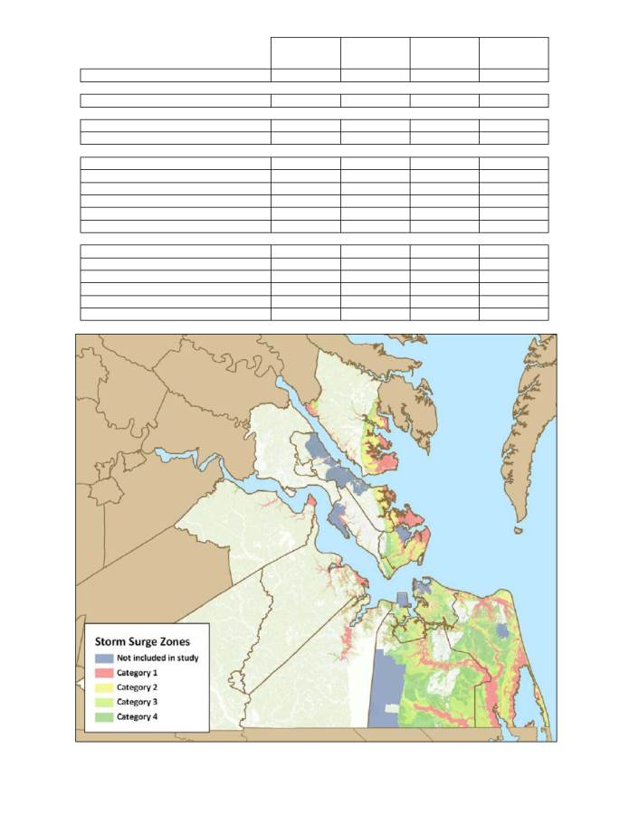
Page | 27
Hampton Roads, VA
Storm Surge Exposure
Category 1
Category 2
Category 3
Category 4
Area (square miles)
266.72
391.59
585.39
788.90
Population
109,636
322,099
652,319
1,003,617
Businesses
1,650
8,524
19,480
30,972
# of Employees
27,732
126,967
257,207
396,296
Total Roads (linear miles)
473.59
1,702.17
3,492.23
5,159.97
Interstate
6.27
13.83
33.64
62.55
Primary
39.77
149.73
352.39
527.31
Secondary
73.01
170.09
203.62
223.78
Urban
277.06
1,176.71
2,569.07
3,869.49
Other
77.48
191.81
333.51
476.84
Total Critical Infrastructure
24
111
253
390
Care Facilities
0
4
7
9
Emergency Operations Centers
0
1
1
2
Fire Stations
5
10
15
20
Police Stations
2
14
23
36
Schools
17
82
207
323
Map 8: Hampton Roads Storm Surge Inundation Areas
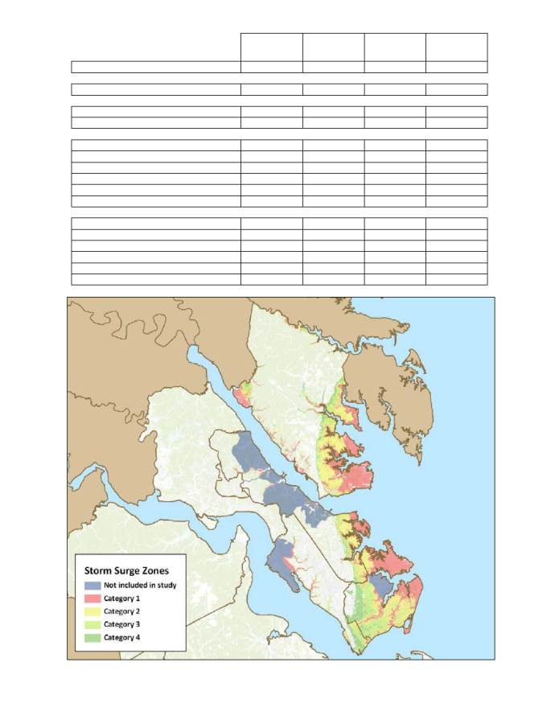
Page | 28
Peninsula
Storm Surge Exposure
Category 1
Category 2
Category 3
Category 4
Area (square miles)
77.03
124.43
149.52
166.70
Population
40,976
116,542
169,073
207,267
Businesses
534
2,292
4,192
5,340
# of Employees
5,802
22,937
47,795
58,960
Total Roads (linear miles)
266.66
728.08
1,021.32
1,197.27
Interstate
1.16
5.54
10.38
16.70
Primary
11.94
47.37
86.17
106.23
Secondary
69.56
164.69
196.71
208.49
Urban
127.22
400.02
586.22
707.99
Other
56.78
110.47
141.84
157.86
Total Critical Infrastructure
15
47
74
88
Care Facilities
0
0
1
1
Emergency Operations Centers
0
1
1
1
Fire Stations
4
4
4
4
Police Stations
1
3
5
5
Schools
10
39
63
77
Map 9: Peninsula Storm Surge Inundation Areas
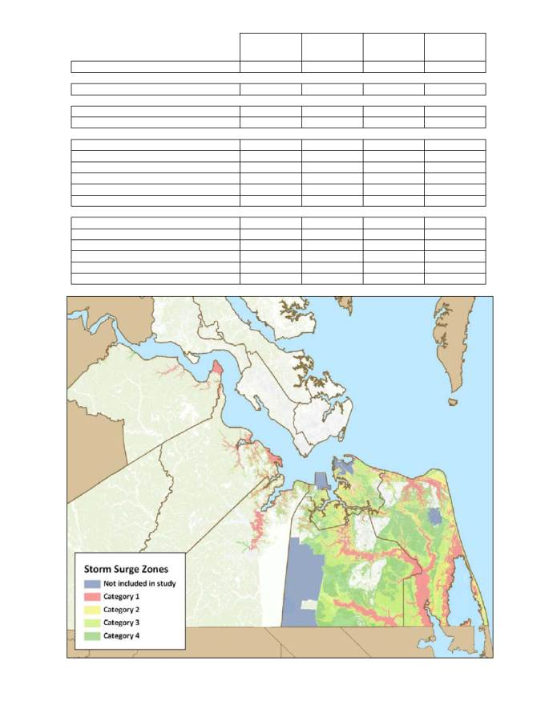
Page | 29
Southside Hampton Roads
Storm Surge Exposure
Category 1
Category 2
Category 3
Category 4
Area (square miles)
189.70
267.17
435.87
622.20
Population
68,660
205,557
483,246
796,350
Businesses
1,116
6,232
15,288
25,632
# of Employees
21,930
104,030
209,412
337,336
Total Roads (linear miles)
206.93
974.09
2,470.91
3,962.70
Interstate
5.11
8.29
23.26
45.85
Primary
27.83
102.37
266.22
421.08
Secondary
3.45
5.40
6.91
15.28
Urban
149.84
776.69
1,982.85
3,161.50
Other
20.70
81.34
191.67
318.98
Total Critical Infrastructure
9
64
179
302
Care Facilities
0
4
6
8
Emergency Operations Centers
0
0
0
1
Fire Stations
1
6
11
16
Police Stations
1
11
18
31
Schools
7
43
144
246
Map 10: Southside Hampton Roads Storm Surge Inundation Areas
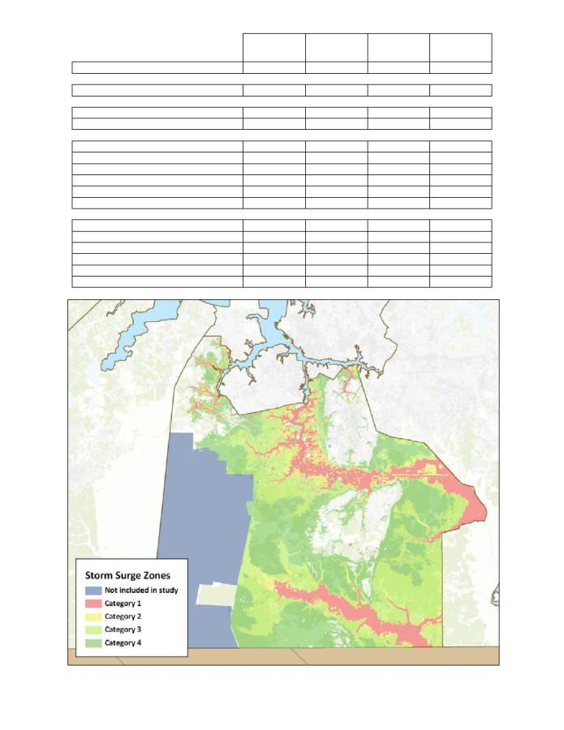
Page | 30
Chesapeake, Virginia
Storm Surge Exposure
Category 1
Category 2
Category 3
Category 4
Area (square miles)
35.71
52.32
125.14
216.41
Population
14,148
31,359
79,556
131,588
Businesses
221
604
1,778
3,373
# of Employees
3,277
7,869
19,998
36,380
Total Roads (linear miles)
33.71
131.80
441.04
810.17
Interstate
1.94
2.25
7.67
14.15
Primary
5.93
17.57
60.23
115.04
Secondary
0.00
0.00
0.00
0.00
Urban
23.96
104.57
352.67
641.09
Other
1.88
7.42
20.47
39.89
Total Critical Infrastructure
3
8
30
50
Care Facilities
0
0
0
0
Emergency Operations Centers
0
0
0
0
Fire Stations
0
2
6
10
Police Stations
1
1
3
5
Schools
2
5
21
35
Map 11: Chesapeake, Virginia Storm Surge Inundation Areas
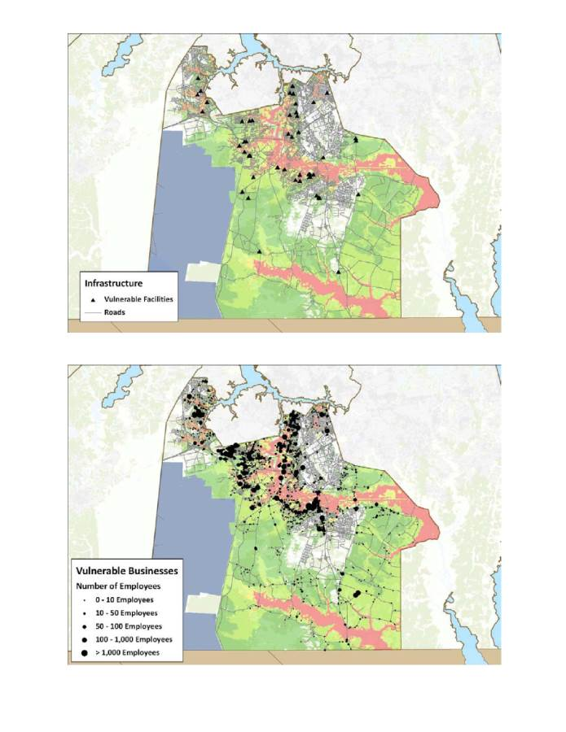
Page | 31
Map 12: Roads and Critical Infrastructure Vulnerable to Storm Surge in Chesapeake, Virginia
Map 13: Businesses Vulnerable to Storm Surge in Chesapeake, Virginia
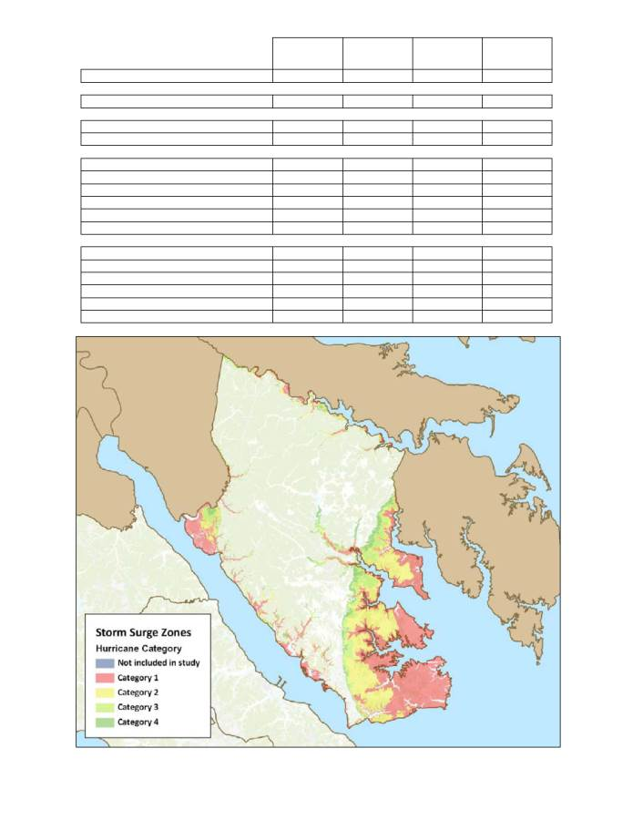
Page | 32
Gloucester County, Virginia
Storm Surge Exposure
Category 1
Category 2
Category 3
Category 4
Area (square miles)
34.95
56.71
64.23
69.94
Population
4,645
8,132
9,181
10,119
Businesses
80
136
172
183
# of Employees
517
689
899
937
Total Roads (linear miles)
88.90
167.57
191.08
203.89
Interstate
0.00
0.00
0.00
0.00
Primary
1.08
4.21
6.38
7.54
Secondary
42.10
88.11
100.70
107.55
Urban
0.11
0.14
0.14
0.14
Other
45.62
75.11
83.85
88.66
Total Critical Infrastructure
2
2
2
2
Care Facilities
0
0
0
0
Emergency Operations Centers
0
0
0
0
Fire Stations
1
1
1
1
Police Stations
0
0
0
0
Schools
1
1
1
1
Map 14: Gloucester County, Virginia Storm Surge Inundation Areas
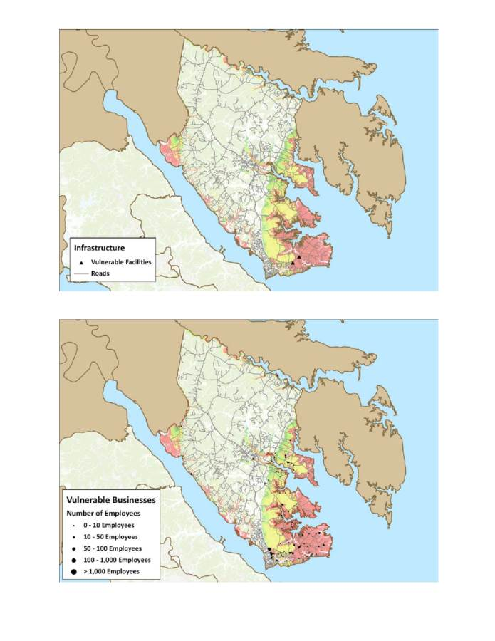
Page | 33
Map 15: Roads and Critical Infrastructure Vulnerable to Storm Surge in Gloucester County, Virginia
Map 16: Businesses Vulnerable to Storm Surge in Gloucester County, Virginia
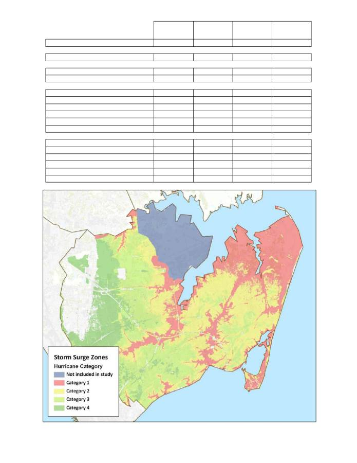
Page | 34
Hampton, Virginia
Storm Surge Exposure
Category 1
Category 2
Category 3
Category 4
Area (square miles)
14.56
27.76
38.68
45.09
Population
17,880
70,534
104,864
123,643
Businesses
239
1,523
3,083
3,812
# of Employees
3,290
17,364
39,559
47,195
Total Roads (linear miles)
94.86
358.76
555.14
650.54
Interstate
0.15
4.28
7.78
12.25
Primary
4.41
29.14
59.47
70.20
Secondary
0.00
0.00
0.00
0.05
Urban
86.11
304.26
446.15
518.23
Other
4.19
21.09
41.74
49.80
Total Critical Infrastructure
5
33
53
60
Care Facilities
0
0
0
0
Emergency Operations Centers
0
1
1
1
Fire Stations
2
2
2
2
Police Stations
0
2
3
3
Schools
3
28
47
54
Map 17: Hampton, Virginia Storm Surge Inundation Areas
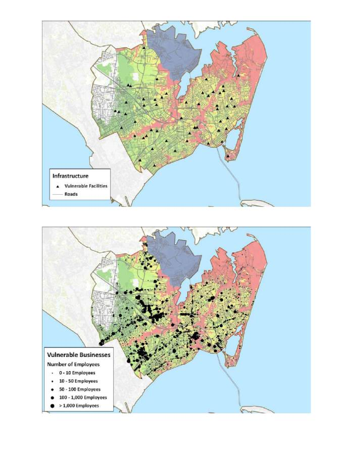
Page | 35
Map 18: Roads and Critical Infrastructure Vulnerable to Storm Surge in Hampton, Virginia
Map 19: Businesses Vulnerable to Storm Surge in Hampton, Virginia
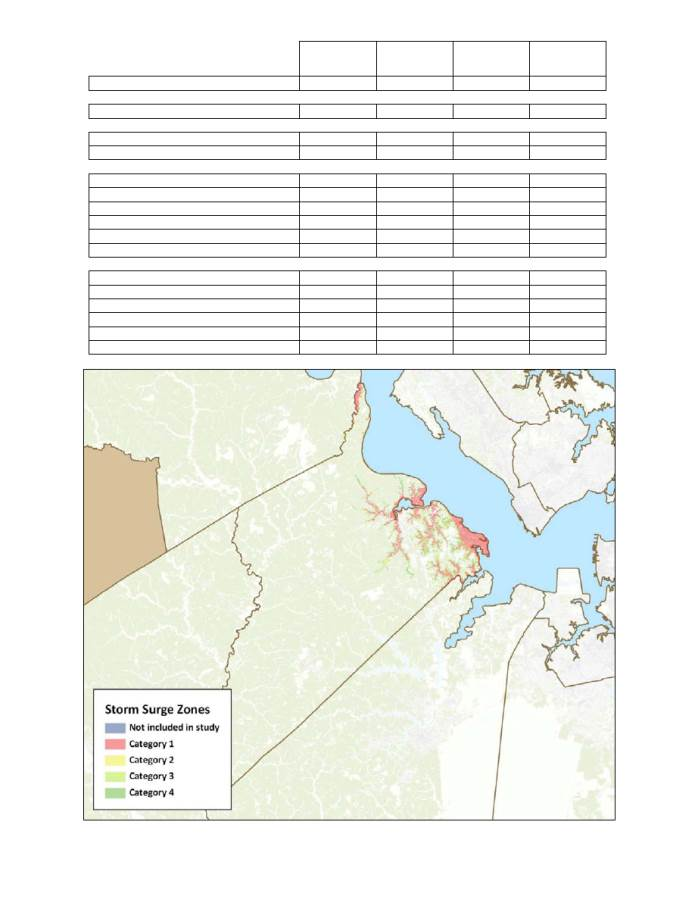
Page | 36
Isle of Wight County, Virginia
Storm Surge Exposure
Category 1
Category 2
Category 3
Category 4
Area (square miles)
12.03
14.93
16.18
21.18
Population
2,802
3,765
4,334
6,042
Businesses
15
21
44
69
# of Employees
163
176
218
382
Total Roads (linear miles)
5.90
9.77
14.52
30.27
Interstate
0.00
0.00
0.00
0.00
Primary
2.82
3.22
3.95
5.70
Secondary
1.28
2.84
4.10
9.92
Urban
0.60
1.10
1.55
3.17
Other
1.21
2.61
4.93
11.48
Total Critical Infrastructure
0
0
0
0
Care Facilities
0
0
0
0
Emergency Operations Centers
0
0
0
0
Fire Stations
0
0
0
0
Police Stations
0
0
0
0
Schools
0
0
0
0
Map 20: Isle of Wight County, Virginia Storm Surge Inundation Areas
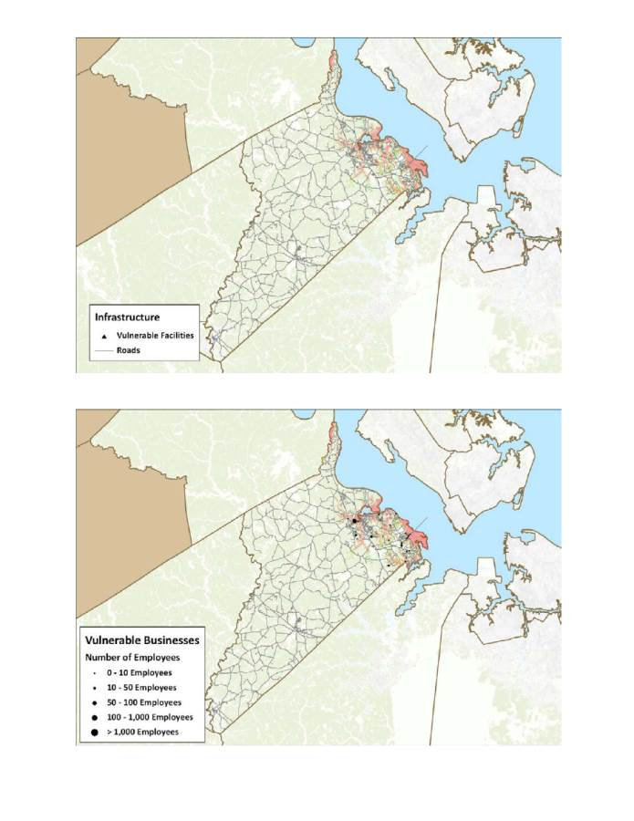
Page | 37
Map 21: Roads and Critical Infrastructure Vulnerable to Storm Surge in Isle of Wight County, Virginia
Map 22: Businesses Vulnerable to Storm Surge in Isle of Wight County, Virginia
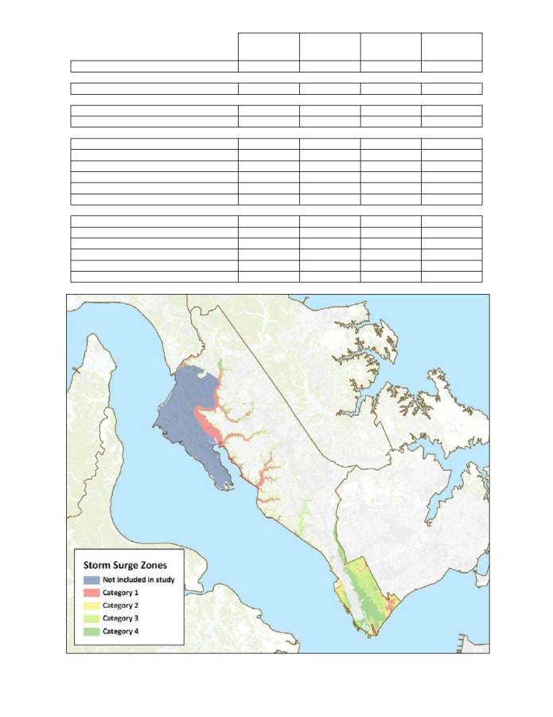
Page | 38
Newport News, Virginia
Storm Surge Exposure
Category 1
Category 2
Category 3
Category 4
Area (square miles)
5.78
7.72
10.92
14.55
Population
4,976
11,189
22,557
37,482
Businesses
18
105
333
720
# of Employees
258
1,211
3,176
6,567
Total Roads (linear miles)
6.67
30.30
71.08
125.63
Interstate
0.95
1.16
2.36
3.86
Primary
0.88
2.64
5.56
11.90
Secondary
0.00
0.00
0.00
0.00
Urban
4.37
25.03
60.15
103.75
Other
0.48
1.48
3.02
6.12
Total Critical Infrastructure
0
4
11
17
Care Facilities
0
0
1
1
Emergency Operations Centers
0
0
0
0
Fire Stations
0
0
0
0
Police Stations
0
0
1
1
Schools
0
4
9
15
Map 23: Newport News, Virginia Storm Surge Inundation Areas
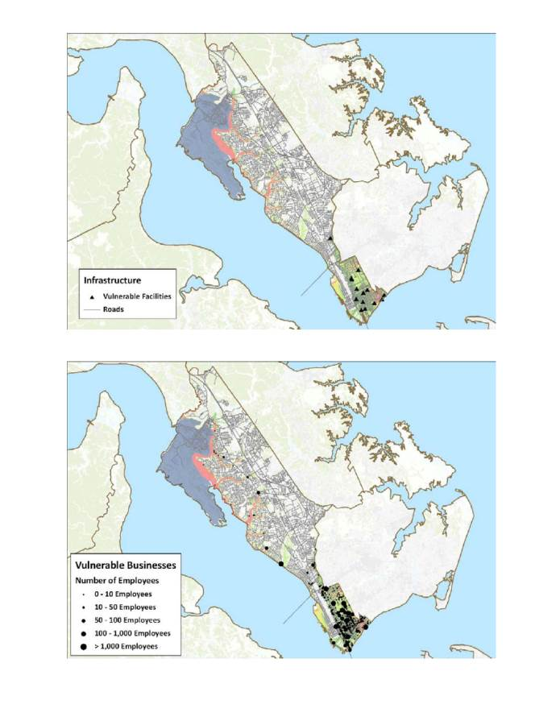
Page | 39
Map 24: Roads and Critical Infrastructure Vulnerable to Storm Surge in Newport News, Virginia
Map 25: Businesses Vulnerable to Storm Surge in Newport News, Virginia
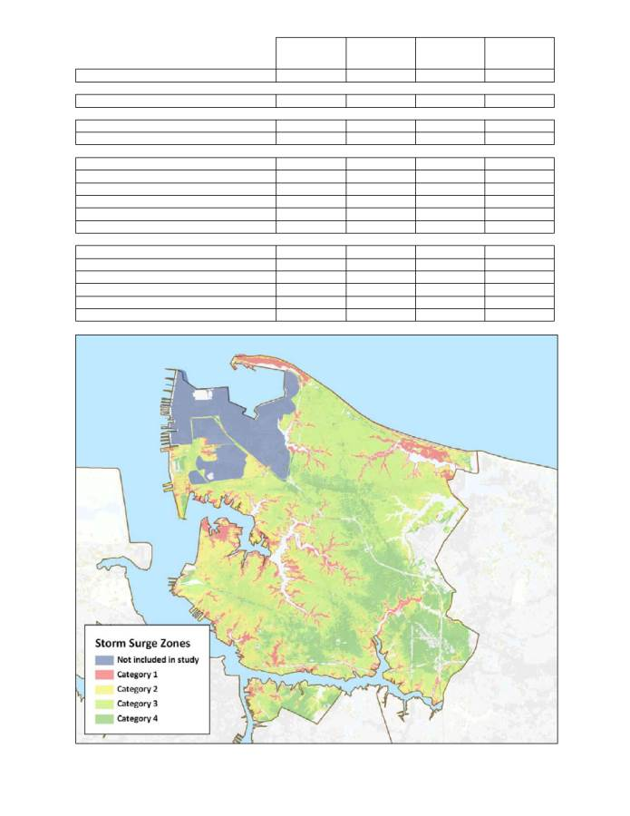
Page | 40
Norfolk, Virginia
Storm Surge Exposure
Category 1
Category 2
Category 3
Category 4
Area (square miles)
5.04
15.08
34.87
44.34
Population
19,082
65,539
168,069
209,958
Businesses
429
2,941
6,550
8,084
# of Employees
8,978
58,837
98,888
123,951
Total Roads (linear miles)
93.55
376.48
839.02
998.44
Interstate
2.18
4.45
10.23
19.92
Primary
12.05
43.09
106.72
139.49
Secondary
0.00
0.00
0.00
0.00
Urban
64.84
278.30
620.95
699.79
Other
14.48
50.64
101.13
139.24
Total Critical Infrastructure
4
31
77
100
Care Facilities
0
3
4
6
Emergency Operations Centers
0
0
0
1
Fire Stations
0
1
1
1
Police Stations
0
6
8
10
Schools
4
21
64
82
Map 26: Norfolk, Virginia Storm Surge Inundation Areas
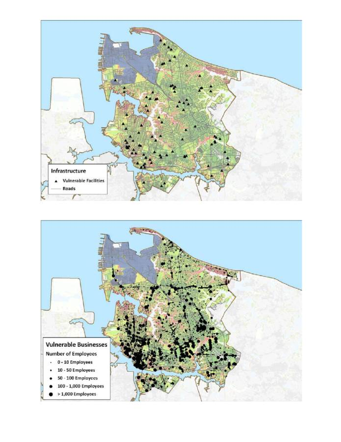
Page | 41
Map 27: Roads and Critical Infrastructure Vulnerable to Storm Surge in Norfolk, Virginia
Map 28: Businesses Vulnerable to Storm Surge in Norfolk, Virginia
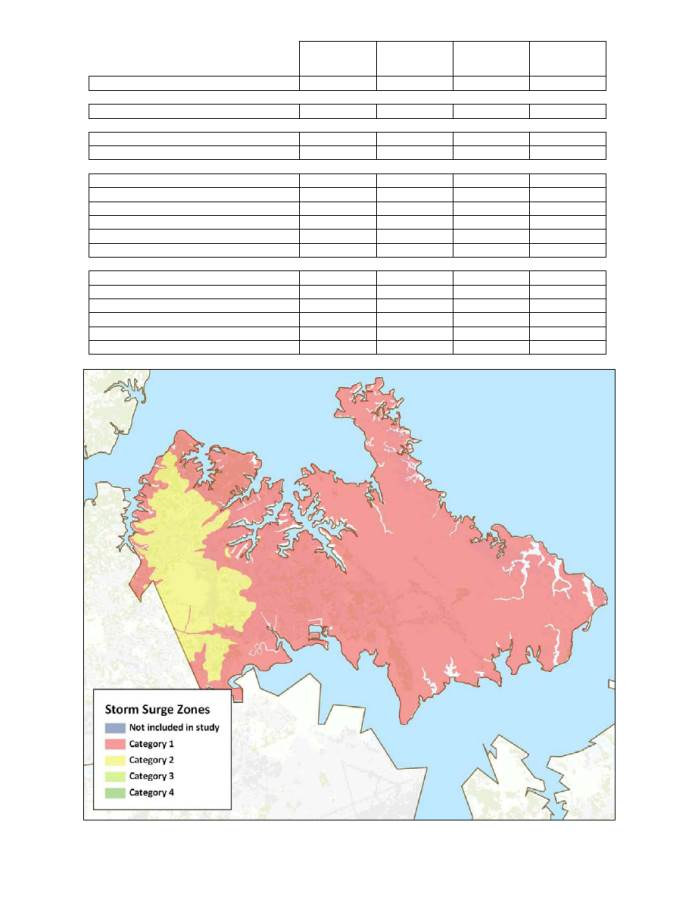
Page | 42
Poquoson, Virginia
Storm Surge Exposure
Category 1
Category 2
Category 3
Category 4
Area (square miles)
13.32
15.76
15.76
15.76
Population
7,904
12,146
12,146
12,146
Businesses
105
285
285
285
# of Employees
1,316
2,305
2,305
2,305
Total Roads (linear miles)
43.73
66.72
66.94
66.94
Interstate
0.00
0.00
0.00
0.00
Primary
4.80
7.80
7.85
7.85
Secondary
0.15
0.24
0.34
0.34
Urban
32.84
49.01
49.06
49.06
Other
5.95
9.68
9.68
9.68
Total Critical Infrastructure
7
7
7
7
Care Facilities
0
0
0
0
Emergency Operations Centers
0
0
0
0
Fire Stations
1
1
1
1
Police Stations
1
1
1
1
Schools
5
5
5
5
Map 29: Poquoson, Virginia Storm Surge Inundation Areas
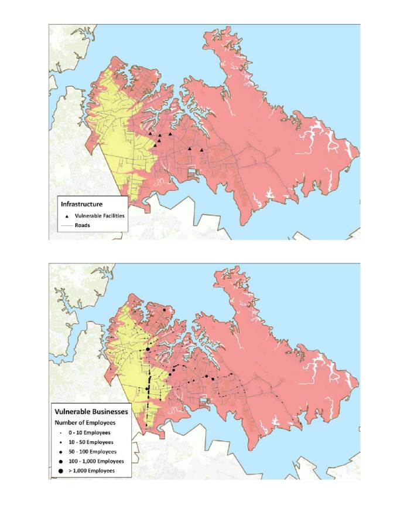
Page | 43
Map 30: Roads and Critical Infrastructure Vulnerable to Storm Surge in Poquoson, Virginia
Map 31: Businesses Vulnerable to Storm Surge in Poquoson, Virginia
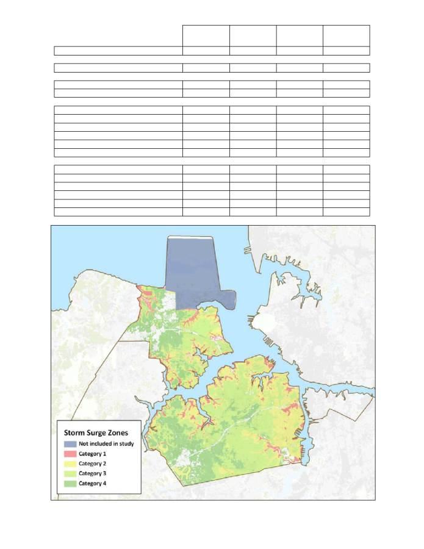
Page | 44
Portsmouth, Virginia
Storm Surge Exposure
Category 1
Category 2
Category 3
Category 4
Area (square miles)
2.18
8.82
19.65
26.07
Population
3,770
24,974
64,696
87,209
Businesses
115
936
2,170
2,843
# of Employees
5,980
16,708
36,047
43,058
Total Roads (linear miles)
14.17
145.91
361.14
465.70
Interstate
0.55
0.75
1.06
1.65
Primary
0.90
11.69
33.66
47.39
Secondary
0.00
0.00
0.00
0.00
Urban
11.85
122.45
303.11
389.82
Other
0.86
11.01
23.30
26.83
Total Critical Infrastructure
0
13
32
39
Care Facilities
0
1
2
2
Emergency Operations Centers
0
0
0
0
Fire Stations
0
1
1
1
Police Stations
0
3
4
5
Schools
0
8
25
31
Map 32: Portsmouth, Virginia Storm Surge Inundation Areas
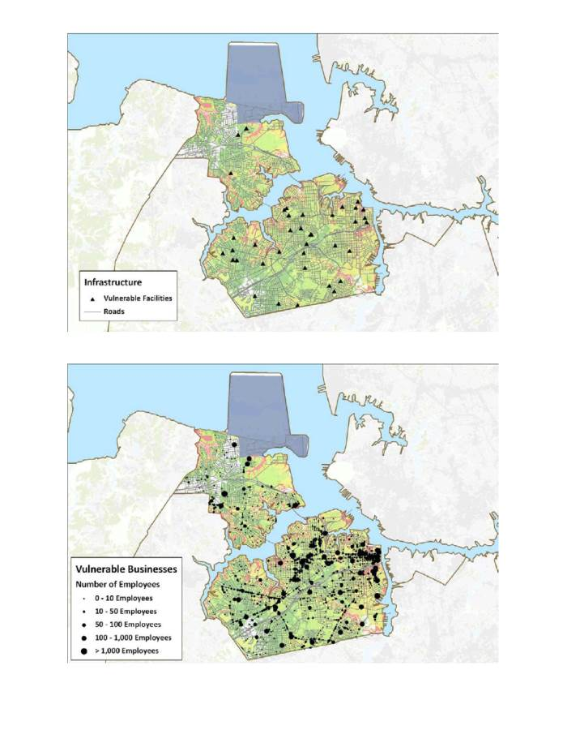
Page | 45
Map 33: Roads and Critical Infrastructure Vulnerable to Storm Surge in Portsmouth, Virginia
Map 34: Businesses Vulnerable to Storm Surge in Portsmouth, Virginia
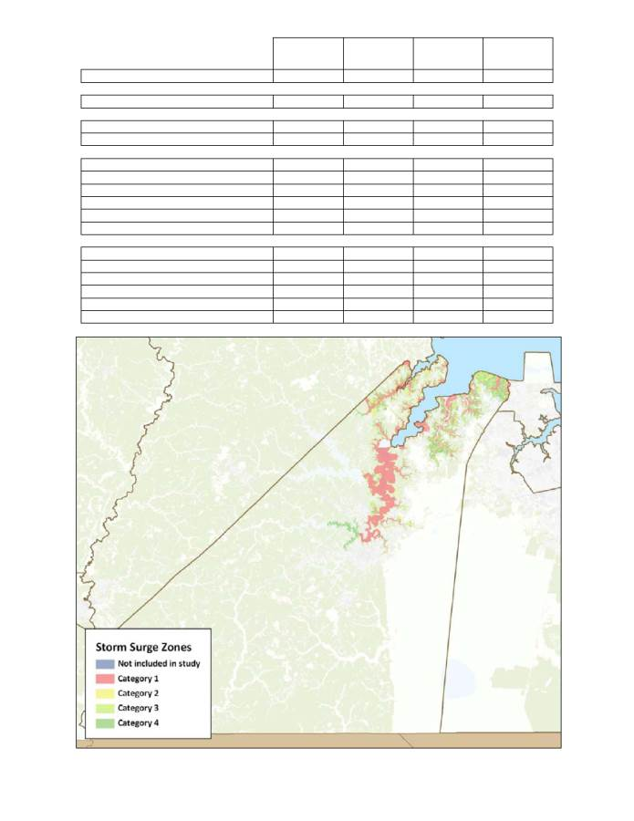
Page | 46
Suffolk, Virginia
Storm Surge Exposure
Category 1
Category 2
Category 3
Category 4
Area (square miles)
13.23
16.05
20.16
27.13
Population
4,281
5,648
8,478
14,511
Businesses
16
21
95
196
# of Employees
121
131
1,023
1,705
Total Roads (linear miles)
2.31
5.89
23.47
76.26
Interstate
0.01
0.01
0.01
0.58
Primary
1.00
1.85
4.48
9.17
Secondary
0.00
0.13
0.36
1.16
Urban
1.06
3.45
16.96
57.25
Other
0.23
0.45
1.66
8.11
Total Critical Infrastructure
0
0
1
4
Care Facilities
0
0
0
0
Emergency Operations Centers
0
0
0
0
Fire Stations
0
0
0
0
Police Stations
0
0
0
0
Schools
0
0
1
4
Map 35: Suffolk, Virginia Storm Surge Inundation Areas
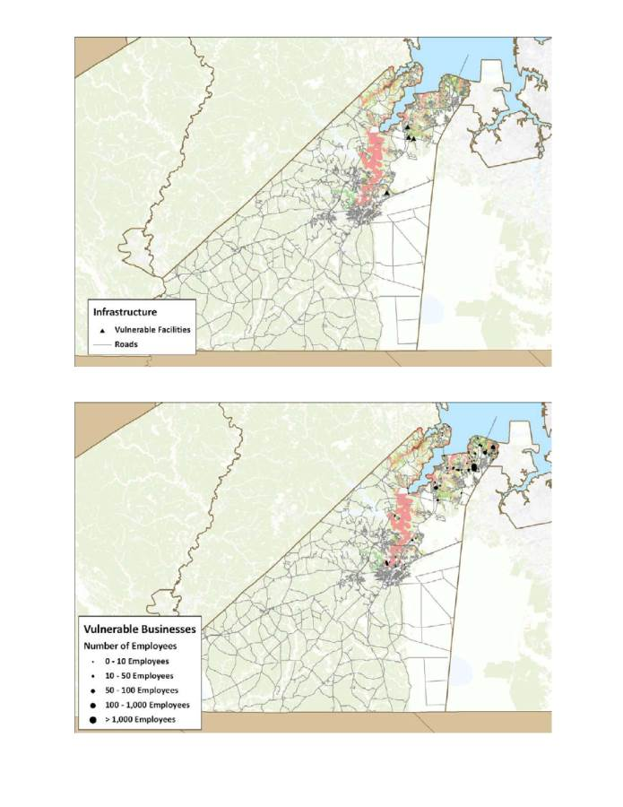
Page | 47
Map 36: Roads and Critical Infrastructure Vulnerable to Storm Surge in Suffolk, Virginia
Map 37: Businesses Vulnerable to Storm Surge in Suffolk, Virginia
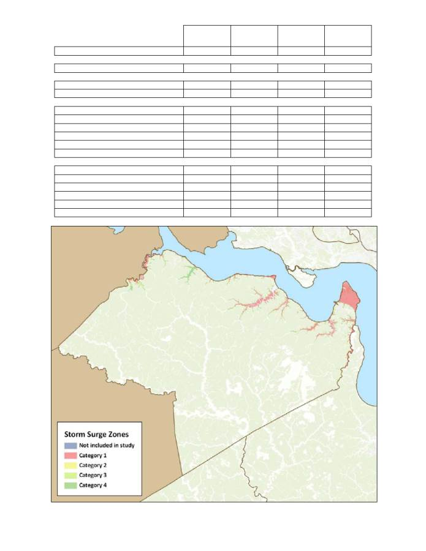
Page | 48
Surry County, Virginia
Storm Surge Exposure
Category 1
Category 2
Category 3
Category 4
Area (square miles)
6.37
7.13
7.14
10.55
Population
96
116
116
215
Businesses
1
1
1
1
# of Employees
2
2
2
2
Total Roads (linear miles)
2.41
2.89
2.88
5.14
Interstate
0.00
0.00
0.00
0.00
Primary
0.02
0.02
0.02
0.16
Secondary
2.18
2.44
2.44
4.19
Urban
0.00
0.00
0.00
0.00
Other
0.22
0.43
0.43
0.76
Total Critical Infrastructure
0
0
0
0
Care Facilities
0
0
0
0
Emergency Operations Centers
0
0
0
0
Fire Stations
0
0
0
0
Police Stations
0
0
0
0
Schools
0
0
0
0
Map 38: Surry County, Virginia Storm Surge Inundation Areas
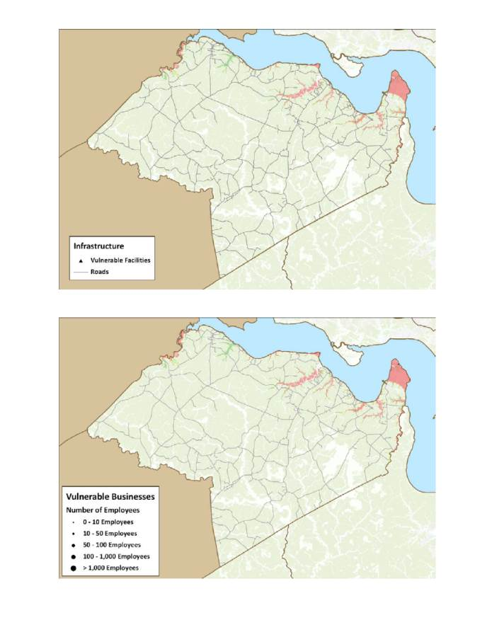
Page | 49
Map 39: Roads and Critical Infrastructure Vulnerable to Storm Surge in Surry County, Virginia
Map 40: Businesses Vulnerable to Storm Surge in Surry County, Virginia
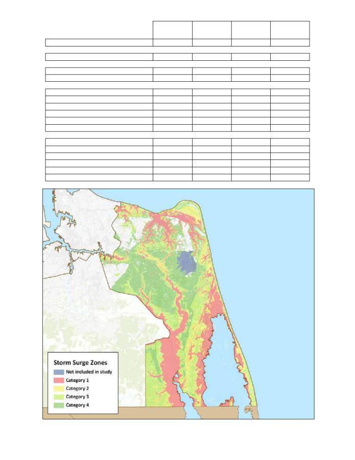
Page | 50
Virginia Beach, Virginia
Storm Surge Exposure
Category 1
Category 2
Category 3
Category 4
Area (square miles)
115.13
152.84
212.72
276.52
Population
24,481
74,156
157,997
346,827
Businesses
319
1,708
4,650
11,066
# of Employees
3,409
20,307
53,236
131,858
Total Roads (linear miles)
54.89
301.35
788.83
1,576.74
Interstate
0.43
0.83
4.29
9.55
Primary
5.10
24.92
57.18
104.14
Secondary
0.00
0.00
0.01
0.01
Urban
47.53
266.83
687.62
1,370.37
Other
1.82
8.77
39.74
92.67
Total Critical Infrastructure
2
12
39
109
Care Facilities
0
0
0
0
Emergency Operations Centers
0
0
0
0
Fire Stations
1
2
3
4
Police Stations
0
1
3
11
Schools
1
9
33
94
Map 41: Virginia Beach, Virginia Storm Surge Inundation Areas
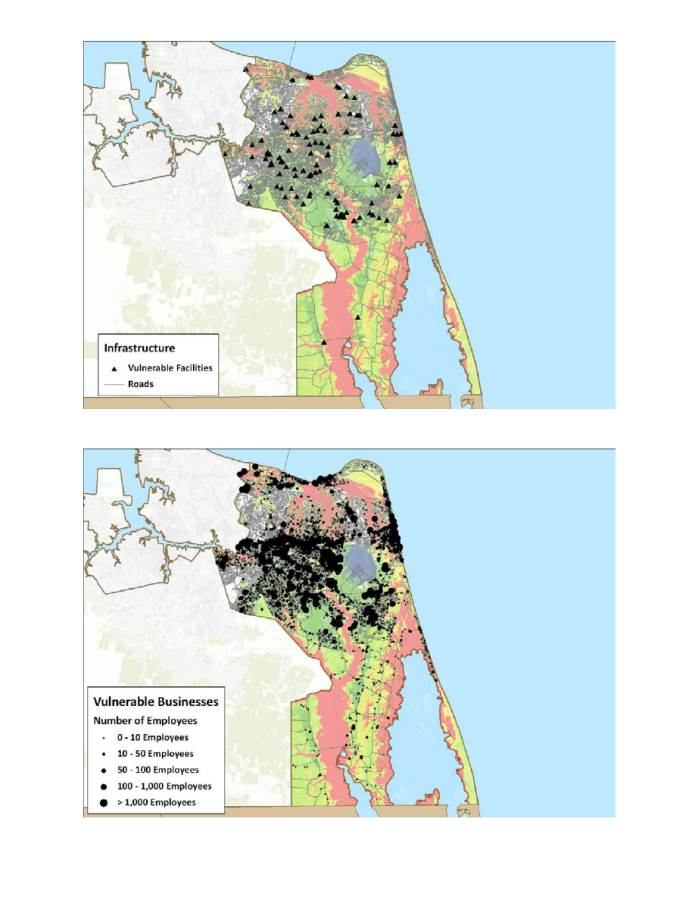
Page | 51
Map 42: Roads and Critical Infrastructure Vulnerable to Storm Surge in Virginia Beach, Virginia
Map 43: Businesses Vulnerable to Storm Surge in Virginia Beach, Virginia
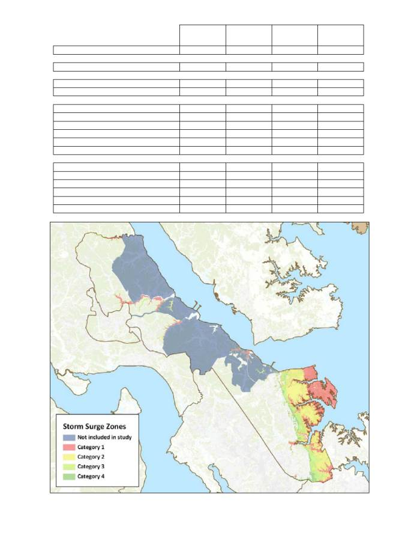
Page | 52
York County, Virginia
Storm Surge Exposure
Category 1
Category 2
Category 3
Category 4
Area (square miles)
8.24
16.28
19.74
21.14
Population
5,514
14,465
20,245
23,788
Businesses
92
243
319
340
# of Employees
421
1,368
1,856
1,956
Total Roads (linear miles)
32.48
104.71
136.82
149.88
Interstate
0.07
0.10
0.24
0.60
Primary
0.76
3.57
6.65
8.42
Secondary
27.31
76.34
95.67
100.46
Urban
3.80
21.59
30.71
36.80
Other
0.54
3.11
3.55
3.59
Total Critical Infrastructure
1
3
3
4
Care Facilities
0
0
0
0
Emergency Operations Centers
0
0
0
0
Fire Stations
0
1
1
1
Police Stations
0
0
0
0
Schools
1
3
3
4
Map 44: York County, Virginia Storm Surge Inundation Areas
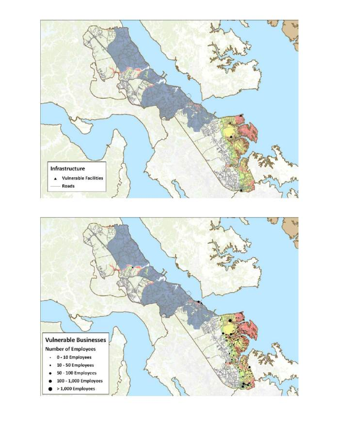
Page | 53
Map 45: Roads and Critical Infrastructure Vulnerable to Storm Surge in York County, Virginia
Map 46: Businesses Vulnerable to Storm Surge in York County, Virginia

Page | 54
P
UBLIC
O
UTREACH
During the second year of HRPDC’s climate change work, the focus shifted from stakeholder
involvement with local governments to a broader public outreach and education effort, which
consisted mostly of meetings with municipal boards and presentations to various groups. Over the
course of the current grant period, from January 2010 to March 2011, HRPDC staff participated in
eighteen (18) such events, ranging from presentations to university classes to participating in
conference panels. Most events consisted of HRPDC staff giving presentations followed by periods
for extended comment or question and answer sessions. A sample presentation is included in
Appendix C. Attendance numbers are approximate. HRPDC staff that participated in these outreach
efforts included:
John Carlock, Deputy Executive Director
Lisa Hardy, Physical and Environmental Planner
Whitney Katchmark, Principal Water Resource Planner
Benjamin McFarlane, Physical and Environmental Planner
Eric Walberg, Physical and Environmental Planning Administrator (former staff)
G
OVERNMENT
Several of the events that HRPDC staff participated in involved discussions with or presentations to
local government staff or elected officials. Eight (8) of the events during this grant period are
included in this category.
February 10, 2010 – Mr. Walberg gave a presentation to the Hampton Roads Planning
District Commission at its annual retreat, focusing on the risks the Hampton Roads region
faces from sea level rise caused by climate change. The presentation included a summary of
the recommendations from the Governor’s Commission on Climate Change, as well as some
initial results from an effort by VIMS and Noblis to model the impacts of sea level rise and
storm surge on the region. The presentation included some information on the status of
offshore wind developments off Virginia Beach. Mr. Walberg made several
recommendations to the Commission, including:
o
Obtaining consistent, high resolution elevation data for the entire region
o
Continuing to develop modeling tools that link storm surge and sea level rise

Page | 55
o
Conducting a vulnerability model for Hampton Roads’ built and natural
environments under various storm surge and sea level rise scenarios
o
Developing improved real-time predictive tool for storm surge
o
Developing long-range plans based on vulnerability analyses.
Attendance: 50
February 10, 2010 – Mr. Walberg gave a presentation to the Hampton City Council that
described the threat posed by climate change to Hampton and the rest of the region and
described the work HRPDC staff was engaged in through this grant. The presentation
covered the scope of the three-year focal area grant, described some of the possible impacts
of climate change on the region, including temperature and precipitation increases and sea
level rise, and related regional planning efforts. The presentation also described a potential
regional working group that would involve different stakeholders in addressing climate
change and sea level rise from a regional perspective. This group would include elected
officials, government staff, Department of Defense representatives, business and industry
representatives, academics and researchers, and various advocacy groups. This
presentation was covered by the Daily Press, the Peninsula’s daily newspaper (Macaulay
2010).
Attendance: 40
March 8, 2010 – Mr. Walberg presented to the Portsmouth City Council. This presentation
covered much of the same material as the earlier presentation to the Hampton City Council.
In addition, a discussion of changing predictions of sea level rise was added to illustrate the
uncertainties involved in planning for sea level rise at the municipal level.
Attendance: 35
August 24, 2010 – Mr. McFarlane and Mr. Carlock met with Norfolk Public Works staff and
engineering consultants to discuss HRPDC’s climate change work, Norfolk’s coastal flooding
study, and how HRPDC could support Norfolk’s efforts. The meeting also included
discussion of case studies for how to address sea level rise and flooding, as well as HRPDC’s
green infrastructure work.
Attendance: 5

Page | 56
August 25, 2010 – Mr. McFarlane and Mr. Carlock attended a work sessions of the Norfolk
City Council focused on the City’s efforts to address flooding. Mr. McFarlane made some
comments about sea level rise in the region and HRPDC’s research efforts.
Attendance: 40
November 15, 2010 – Mr. McFarlane participated in a workshop organized by the Cabell
Brand Center for Global Poverty and Resource Sustainability Studies. The workshop
brought together representatives from the three Coastal Zone Planning District
Commissions working on climate change projects as well as researchers to present to
representatives from local governments and organizations in the western part of Virginia
on how climate change could affect communities in Virginia. Mr. McFarlane’s presentation
focused on the results from HRPDC’s first year of research and analysis. Representatives
from MPPDC and NVRC also presented.
Attendance: 15
March 1, 2011 – Mr. McFarlane and Mr. Carlock presented to the Hampton Waterway
Management Plan Steering Committee as part of its technical presentation series. This
Steering Committee is helping the City Council identify potential solutions to addressing
longstanding problems with flooding and stormwater management in the City. The
presentation covered regional water management issues in Hampton Roads, including
stormwater quality, the Chesapeake Bay TMDL, hazard mitigation, storm and tidal flooding,
sea level rise, and climate change. The presentation included a description of institutional,
regulatory, and technical issues, as well as local and regional efforts related to water
management in Hampton Roads.
Attendance: 50
March 22, 2011 – Mr. McFarlane and Ms. Katchmark met with representatives from the U.S.
Geological Survey and VIMS to discuss subsidence and sea level rise in Hampton Roads. Dr.
John Boon from VIMS discussed the results of research he and some colleagues conducted
on relative sea level rise in Hampton Roads using data from NOAA tide gauges. The USGS
representatives discussed their work looking at the impacts of groundwater withdrawals on
local subsidence. HRPDC staff led a discussion of possible directions for future research and

Page | 57
collaboration to help identify the causes of local subsidence and the impacts of subsidence
on relative sea level rise in the region.
Attendance: 8
O
THER
G
ROUPS AND
O
RGANIZATIONS
Engagement with citizen groups is critical to educating the public about important regional
environmental issues such as climate change and sea level rise. HRPDC staff continued to engage
non-governmental organizations through this grant period. Ten (10) of the events during this grant
period, including the listening sessions described at the end of this section, are included in this
category.
April 8, 2010 – Mr. Carlock presented to Virginia Beach Vision, a group of business and
professional executives that focuses on economic development and quality of life issues in
Virginia Beach. The presentation covered the same material as the presentation to the
Portsmouth City Council.
Attendance: 20
April 26, 2010 – Mr. Walberg participated in a panel discussing “Sea-level rise and its effect
on the Peninsula,” hosted by the Hampton Roads Section of the American Institute of
Aeronautics and Astronautics. Also participating on the panel were Joe Frank, Mayor of the
City of Newport News, Dr. Barry Stamey, an oceanographer with Noblis, Dr. Harry Wang, a
professor at the Virginia Institute of Marine Science, Dr. Douglas Dwoyer of the Hampton
Roads Research Partnership, and Dr. Samuel Martin, President of ECOS 360 LLC. The panel
discussed the science behind climate change, the projected impacts of sea level rise on the
region, and how these impacts may affect local policies.
Attendance: 40
May 5, 2010 – Mr. Walberg and Mr. McFarlane participated in a panel session at the annual
conference of the Virginia Chapter of the American Planning Association in Norfolk,
Virginia. Also participating in the panel was Laura Grape, a Senior Environmental Planner
for the Northern Virginia Regional Commission; staff from the Middle Peninsula Planning
District Commission also provided material on its climate change efforts. The panel covered
each of the three ongoing Virginia CZMP climate change focal area grant projects, including

Page | 58
processes, initial findings, climate change science and impacts, and next steps. The panelists
also took questions from the audience.
Attendance: 25
May 19, 2010 – Mr. McFarlane presented to the Sierra Club, York River Group and the
Hampton Roads Cool Communities Coalition at an event at the Sandy Bottom Nature Park in
Newport News, Virginia. The presentation covered HRPDC’s climate change research and
included information for the audience on resources they could use to learn more about
climate change, sea level rise, and how communities could adapt.
Attendance: 30
June 25, 2010 – Mr. McFarlane and Mr. Carlock gave a presentation to the members of the
Unitarian Church of Norfolk on the issue of sea level rise in Hampton Roads and the efforts
the region and localities are taking to prepare for it. This presentation covered the role of
the HRPDC in planning for climate change, the status of the focal area grant project, and the
findings from the research through the first year of the project, including information on
climate change impacts, the threat flooding poses for both developed areas and natural
resources, and how the region could potentially begin adapting to sea level rise and
increased flooding.
Attendance: 35
February 2, 2011 – Mr. McFarlane gave an online presentation to an ODU class. The
presentation covered the role of the HRPDC in addressing climate change, and covered the
HRPDC’s climate change work, impacts to Hampton Roads from climate change, and various
challenges to effectively planning for climate change.
Attendance: 5
V
IRGINIA
B
EACH
L
ISTENING
S
ESSIONS
Through much of this grant period, HRPDC staff worked with several other organizations, including
the University of Virginia’s Institute for Environmental Negotiation (IEN), Wetlands Watch, Old
Dominion University, and the City of Virginia Beach’s Environment and Sustainability Office to
develop and implement a proposal for a series of public listening sessions focusing on flooding and
sea level rise in Virginia Beach. IEN and UVA’s Department of Urban and Environmental Planning
received a Virginia Sea Grant to fund these listening sessions along with a graduate urban planning

Page | 59
workshop. These two groups asked HRPDC, Wetlands Watch, and Virginia Beach to help with
planning and organizing the listening sessions and to provide information for public education. The
planning process occurred over several months in 2010 and early 2011, consisting mainly of a
series of conference calls to develop the listening session concept into an implementable plan.
Regular participants on these conference calls included Tanya Denckla Cobb and Melissa Keywood
from the Institute for Environmental Negotiation, Skip Stiles from Wetlands Watch, Benjamin
McFarlane from the HRPDC, and Clay Bernick from the City of Virginia Beach, with others
occasionally joining in. This work culminated in a series of four listening sessions held March 30
th
and 31
st
at four locations in Virginia Beach. A total of 128 residents participated in the sessions: 49
at the Virginia Aquarium and Marine Science Center; 22 at Red Mill Elementary School; 25 at the
Meyera Oberndorf Central Library; and 32 at the Bayside Recreation Center.
The four listening sessions included presentations from Wetlands Watch, the Hampton Roads
Planning District Commission (HRPDC), and the City of Virginia Beach Environment and
Sustainability Office (ESO). Skip Stiles, Executive Director of Wetlands Watch, described the process
of sea level rise and how it is affecting Virginia Beach. Benjamin McFarlane, a Regional Planner for
the HRPDC, gave a presentation on HRPDC’s regional climate change and sea level rise planning and
research efforts. Clay Bernick, Administrator for the Virginia Beach ESO, concluded the
presentations by describing how the City of Virginia Beach is addressing sea level rise and outlining
the City’s sustainability planning efforts.
Staff and volunteers from the UVA Institute for Environmental Negotiation, Wetlands Watch, the
City of Virginia Beach, and the Hampton Roads Planning District Commission (Planners Lisa Hardy
and Benjamin McFarlane) facilitated small group discussions to help citizens understand the issues
and identify which parts of the city were being affected by sea level rise and flooding. These small
group discussions allowed residents to share their personal experiences with sea level rise and
flooding in all parts of the City. The residents also were able to point out the impacts of sea level
rise and flooding (such as erosion, stormwater overflows, etc.) on maps. Residents were also given
an opportunity to make suggestions for distributing information to City residents on sea level rise
and flooding, as well as for the City’s Sustainability Plan. Preliminary findings from the sessions
along with results from a related graduate planning course will be presented to the Virginia Beach

Page | 60
City Council, and a final report will be released by IEN later in 2011. The report will be available on
the IEN website.
4
O
THER
E
FFORTS
In addition to the efforts described above, HRPDC staff is working with several academic
institutions to further planning for climate change and flooding. Dr. James Koch, President Emeritus
of Old Dominion University, has established an informal “water group” that brings together regional
institutions and leaders to discuss the threat of sea level rise on the region. In addition, HRPDC staff
is working with Dr. Koch and Dr. Vinod Agarwal, an economics professor at ODU, to analyze the
short- and long-term economic and fiscal impacts of storm surge and sea level rise on Hampton
Roads.
4
http://www.virginia.edu/ien/sealevelrise/index.html

Page | 61
P
OLICY
O
PTIONS
Existing hazards such as storm surge and long-term threats such as sea level rise can impose high
costs on communities that are unprepared. Therefore, it is important to consider the potential costs
of these hazards when making decisions involving where development and infrastructure
construction should occur, as well as how to adapt existing development and infrastructure.
Incorporating hazard mitigation or climate adaptation policies can reduce costs to property owners
and local governments when those threats materialize.
A
DAPTATION
O
PTIONS
Adaptation options for sea level rise generally fall under three categories: protection,
accommodation, and retreat (Karl, Melillo and Peterson 2009). Protection includes structural
solutions such as shoreline armoring. Accommodation attempts to improve existing buildings or
environments so that they can better withstand flooding or surges, and can include raising dunes,
beach nourishment, or elevating buildings. Retreat focuses on moving natural resources, people, or
buildings away from the hazard, through changes to zoning ordinances, conservation easements, or
outright purchase of property. The costs and benefits of adaptation vary with the option chosen.
Structural measures such as sea walls can be very expensive financially, while moving residents to
safer areas can be both expensive and politically and socially difficult to accomplish. Structural
adaptation can also pose costs for the natural environment. Shoreline armoring, for example, can
help reduce erosion or protect against flooding, but it can prevent wetlands from migrating inland
in response to sea level rise or increase erosion in adjacent, unprotected areas (Titus and Craghan,
Shore protection and retreat 2009). Accommodation or retreat, on the other hand, can reduce
exposure to coastal hazards while allowing for natural resources to adapt as well. One way of
looking at the non-financial costs of adaptation is that protective measures have high
environmental costs, while retreat measures have high social costs. Accommodation is only a
temporary solution and may merely delay those costs.
A report from NOAA’s Coastal Services Center identifies the inherent contradiction in structural
adaptations to hazards such as storm surge and sea level rise: they create a moral hazard,
encouraging development in areas where it may not have occurred (or at least not to the same
extent) otherwise (Booz Allen Hamilton 2010). Limiting development in hazard-prone areas
through outright prohibitions, restrictions, or incentives to develop elsewhere can help mitigate
hazards before they become disasters. Similar policies can help with adapting to sea level rise.

Page | 62
Decreasing future development in areas that may be inundated through prohibitions, incentives, or
planning tools such as setbacks is the most effective mitigation strategy.
Decisions made in the present regarding infrastructure and development can have significant
impacts on how well a community will be able to adapt to sea level rise in the future. Infrastructure
systems such as drinking water and storm water systems are financed and constructed with the
expectation of a certain lifespan to justify their costs. Sea level rise can reduce their usefulness if it
is not taken into account during planning. Development decisions in the present may also have
long-term implications. Construction in vulnerable areas will necessitate later removal or
adaptation. In addition, developing areas that are not vulnerable may still have negative impacts on
the natural environment if they impede wetland migration. Research indicates that nearly 60% of
the land within one meter of elevation of tidal wetlands between Massachusetts and Florida is
either already developed or planned for development, and that less than 10% is protected from
development (Titus, Hudgens, et al. 2009). Preventing the upland migration of wetlands may result
in their disappearance, along with the water quality and flooding protections they provide, as sea
level rises.
P
LANNING FOR
S
EA
L
EVEL
R
ISE
Typical planning tools are insufficient for addressing sea level and climate change. One reason is
that the impacts of climate change and sea level rise are for the most part decades into the future,
so it will be hard to gauge the benefits of planning for them today, while the costs will certainly be
endured in the present or near future. Another reason is that there remains a great deal of
uncertainty about the extent of climate change and sea level rise over the next century. Effective
adaptation requires sufficient lead times to prevent losses, yet using normal planning practices
could result in either over- or under-adaptation, resulting in localities either wasting funds or not
being prepared. Planning in some fashion is still required though. Three possible ways for planning
for climate change and sea level rise are hazard mitigation planning, scenario planning, and
anticipatory planning.
Hazard mitigation planning is presently used for current hazards such as hurricanes, tornadoes,
earthquakes, etc. Its goal is the mitigation of “risks associated with natural and other hazards in
terms of losses of life, property, and natural and economic resources” and is usually conducted
through an interdisciplinary process involving emergency managers, public works officials, land
use planners, and the public (Booz Allen Hamilton 2010). Through hazard mitigation planning,

Page | 63
officials identify potential hazards, assess vulnerability to those hazards, and then devise and
implement policies designed to reduce exposure and vulnerability (Godschalk, Urban Hazard
Mitigation: Creating Resilient Cities 2003). Hazard mitigation planning is proactive and can produce
both structural (e.g. flood control measures) and non-structural (e.g. redirecting development away
from floodplains) recommendations.
Scenario planning is a tool that allows for consideration of multiple paths. Planners can use
scenarios to assess how changes in policies or conditions could affect their communities. Scenario
planning has been used in the business world to account for uncertainty about the future (Schwartz
1991). It has also been used with urban planning to test alternative visions (Hopkins and Zapata
2007). Scenario planning can utilize other analysis tools such as build-out analyses to measure the
impacts of changes to policies or other conditions on future development (Godschalk, Buildout
Analysis: A Valuable Planning and Hazard Mitigation Tool 2006). Even though the extent of climate
change will depend on many future events and decisions, scenarios can allow for testing different
pathways and sets of variables to project future conditions. The IPCC used this approach in its most
recent synthesis report to project climate change impacts based on different socioeconomic
conditions and levels of greenhouse gas emissions (Intergovernmental Panel on Climate Change
2007). A local application of scenario planning could analyze the impacts of different amounts of
sea level rise. Combining build-out analyses with hazard scenarios can measure future as opposed
to current vulnerability. Scenario planning can help mitigate uncertainty in planning by providing
for a range of inputs and results. More likely scenarios can be given greater weight in analyzing
results.
Hazard mitigation planning and scenario planning are both effective planning tools, but when
dealing with the level of uncertainty found in climate change they come up short. Hazard mitigation
planning is generally based on existing hazards and measurable data to analyze vulnerability and
generate costs and benefits of different mitigating actions. Scenario planning alleviates this
somewhat by testing multiple pathways, but still generally results in a single pathway.
Alternatively, anticipatory planning or anticipatory governance addresses this uncertainty by
building flexibility into the planning process. Anticipatory governance consists of three steps:
analysis of future possibilities (similar to the development of alternatives in scenario planning),
creation of flexible and modular adaptation strategies, and monitoring conditions and responding
to changes as they occur (Quay 2010). The first phase requires the development of a range of
scenarios and their potential impacts. Various adaptation strategies are then devised to address

Page | 64
these impacts, with special attention paid to strategies that are useful in multiple scenarios.
Strategies are developed as discrete pieces that can be implemented as needed or halted, depending
on the results of the monitoring of conditions. Anticipatory guidance requires the continuous
reassessment of adaptation strategies as new information and data becomes available. Quay cites
the cities of Phoenix, New York, and Denver as case studies of institutions using anticipatory
governance to plan for climate change adaptation. As it explicitly accounts for uncertainty in future
conditions, anticipatory guidance provides a promising alternative to traditional planning methods
when planning for climate change.
Page | 65
C
ONCLUSIONS AND
N
EXT
S
TEPS
This report has summarized the work of the second grant period of the HRPDC’s Climate Change
Adaptation Focal Area Grant, funded in part by the Virginia Coastal Zone Management Program. The
goals of this grant year period were to develop a tool to estimate the impacts of climate change,
specifically sea level rise, on Hampton Roads, to analyze the projected impacts of climate change
and sea level rise on Hampton Roads’ built environment, natural environment, and economy, and to
continue involving the public and other institutions, governmental and non-governmental, on the
issue of climate change through education and engagement. This report includes the results of the
initial technical analysis of vulnerability. While only a rough estimate, the results show that
Hampton Roads is already vulnerable to storm surge flooding, and for the same reasons (low
elevation and flat topography) is vulnerable to sea level rise. The methodology developed provides
a baseline for future research and analysis. The mix of public outreach events provided a great deal
of feedback for this project as well as opportunities to educate the public on sea level rise.
The work conducted during this grant year has also helped identify specific needs for the final grant
period of this grant. These include data acquisition and analysis, policy research, and establishment
of regional groups tasked with developing and providing advice and recommendations. Data and
research remains one of the greatest needs for effective climate change planning. This includes
utilizing available high-resolution elevation data for vulnerability analysis as well as refining asset
datasets. Research is also needed on subsidence; it is necessary to expand upon the research from
VIMS and refine both the extent and the causes of subsidence in Hampton Roads so that it may be
planned for or mitigated. Working groups that bring together representatives from local
government staffs and technical experts are also needed to help enhance the technical capacity in
Hampton Roads for climate change planning as well as to refine and consider adaptation options.
Such working groups can help form an important part of a regional framework for climate change
planning and adaptation. Continued cooperation and engagement with other organizations and
institutions, such as Old Dominion University’s Climate Change and Sea Level Rise Initiative and
various programs at the Virginia Institute of Marine Science, is an important part of expanding
technical capacity in the region and promoting regional discussion of the implications of climate
change on Hampton Roads.
Looking forward, HRPDC staff will continue during the next grant period to work with other
institutions, including ODU and VIMS, to promote discussion and to develop decision tools to model

Page | 66
impacts, assess vulnerabilities, and analyze potential responses. HRPDC staff will also continue with
analysis of the impacts of climate change on the Hampton Roads region and to engage the public,
other stakeholders, and regional local governments on planning for climate change and sea level
rise.

Page | 67
W
ORKS
C
ITED
Boon, John D., John M. Brubaker, and David R. Forrest. Chesapeake Bay Land Subsidence and Sea
Level Change: An Evaluation of Past and Present Trends and Future Outlook. A Report to the U.S.
Army Corps of Engineers Norfolk District, Gloucester Point, VA: Virginia Institute of Marine Science,
2010.
Boon, John. "The Three Faces of Isabel: Storm Surge, Storm Tide, and Sea Level Rise." Virginia
Institute of Marine Science. 2003. http://web.vims.edu/physical/research/isabel/?svr=www
(accessed December 2, 2009).
Booz Allen Hamilton. Hazard and Resiliency Planning: Perceived Benefits and Barriers Among Land
Use Planners. Charleston, SC: NOAA Coastal Services Center, 2010.
Climate Change Science Program. Coastal Sensitivity to Sea Level Rise: A Focus on the Mid-Atlantic
Region. A reporty by the U.S. Climate Change Science Program and the Subcommittee on Global
Change Research. Washington, DC: U.S. Environmental Protection Agency, 2009.
ESRI.
Business
Analyst.
March
11,
2011.
http://www.esri.com/software/businessanalyst/index.html (accessed April 19, 2011).
Federal Emergency Management Agency. HAZUS-MH Overview. December 14, 2010.
http://www.fema.gov/plan/prevent/hazus/hz_overview.shtm (accessed February 25, 2011).
—. Sea, Lake, Overland, Surge from Hurricanes ("SLOSH" Model). August 11, 2010.
http://www.fema.gov/plan/prevent/nhp/slosh_link.shtm (accessed February 15, 2011).
Gesch, Dean B., Benjamin T. Gutierrez, and Stephen K. Gill. "Coastal elevations." In Coastal
Sensitivity to Sea-Level Rise: A Focus on the Mid-Atlantic Region. A report by the U.S. Climate Change
Program and the Subcommittee on Global Change Research. [J.G. Titus (coordinating lead author),
K.E. Anderson, D.R. Cahoon, D.B. Gesch, S.K. Gill, B.T. Gutierrez, E.R. Thieler, and S.J. Williams (lead
authors)], pp. 25-42. Washington, DC: U.S. Environmental Protection Agency, 2009.
Gill, Stephen K., Robb Wright, James G. Titus, Robert Kafalenos, and Kevin Wright.
"Population, land use, and infrastructure." In Coastal Sensitivity to Sea-Level Rise: A Focus on the
Mid-Atlantic Region. A report by the U.S. Climate Change Program and the Subcommittee on Global
Change Research. [J.G. Titus (coordinating lead author), K.E. Anderson, D.R. Cahoon, D.B. Gesch, S.K.
Gill, B.T. Gutierrez, E.R. Thieler, and S.J. Williams (lead authors)], pp. 105-116. Washington, DC: U.S.
Environmental Protection Agency, 2009.
Godschalk, David R. "Buildout Analysis: A Valuable Planning and Hazard Mitigation Tool." Zoning
Practice 23, no. 3 (2006).
—. "Urban Hazard Mitigation: Creating Resilient Cities." Natural Hazards Review 4, no. 3 (August
2003): 136-143.
Hopkins, Lewis D., and Marisa A. Zapata. Engaging the Future: Forecasts, Scenarios, Plans, and
Projects. Edited by Lewis D. Hopkins and Marisa A. Zapata. Cambridge, MA: Lincoln Institute of Land
Policy, 2007.

Page | 68
Hoyer, Meghan. "Census Bureau admits goof in Norfolk population figures." The Virginian-Pilot,
February 24, 2011.
—. "Census error inflates count of Norfolk neighborhood." The Virginian-Pilot, February 9, 2011.
Intergovernmental Panel on Climate Change. Climate Change 2007: Synthesis Report.
Contributions of Working Groups I, II and III to the Fourth Assessment Report of the
Intergovernmental Panel on Climate Change [Core Writing Team, Pachauri, R.K. and Reisinger, A.
(eds.)]. Geneva, Switzerland: IPCC, 2007, 104.
Karl, Thomas R., Jerry M. Melillo, and Thomas C. Peterson. Global Climate Change Impacts in the
United States. Cambridge University Press, 2009.
Kleinosky, Lisa, Brent Yarnal, and Ann Fisher. "Vulnerability of Hampton Roads, Virginia to
Storm-Surge Flooding and Sea-Level Rise." Natural Hazards 40, no. 1 (2007): 43-70.
Koch, James V. "Costs of Defending Against Rising Sea Levels and Flooding in Mid-Atlantic
Metropolitan Coastal Areas: The Basic Issues." Journal of Regional Analysis & Policy 40, no. 1 (2010):
53-60.
Macaulay, David. "Hampton Roads in 'dire straits' because of global warming predictions, says
expert." Daily Press, February 15, 2010.
National Oceanic and Atmospheric Administration. Tides & Currents. 2011.
http://tidesandcurrents.noaa.gov (accessed 1 2011, 3).
NOAA Coastal Services Center. "'No Regrets' Climate Communication." Coastal Connections,
October/November 2010: 1-2.
—. Coastal County Snapshots. http://www.csc.noaa.gov/digitalcoast/tools/snapshots/index.html
(accessed March 3, 2011).
—. Coastal Inundation Mapping Guidebook. Charleston, SC: NOAA Coastal Services Center, 2009.
—. "Flood Exposure Snapshot: Virginia Beach city, Virginia." Coastal County Snapshots.
www.csc.noaa.gov/snapshots (accessed March 3, 2011).
—. "Ocean and Great Lakes Jobs Snapshot: Virginia Beach city, Virginia." Coastal County Snapshots.
www.csc.noaa.gov/snapshots (accessed March 3, 2011).
NOAA Laboratory for Satellite Altimetry. Sea level rise maps. March 16, 2011.
http://ibis.grdl.noaa.gov/SAT/SeaLevelRise/LSA_SLR_maps.php (accessed June 2, 2011).
Pyke, C. R., et al. "Climate Change and the Chesapeake Bay: State-of-the-Science Review and
Recommendations. A Report from the Chesapeake Bay Program Science and Technical Advisory
Committee (STAC)." Annapolis, MD, 2008, 59.
Quay, Ray. "Anticipatory Governance: A Tool for Climate Change Adaptation." Journal of the
American Planning Association 76, no. 4 (2010): 496-511.
Schwartz, Peter. The Art of the Long View: Planning for the Future in an Uncertain World. New York,
NY: Currency Doubleday, 1991.

Page | 69
The Nature Conservancy. Coastal Resilience: Adapting Natural and Human Communities to Sea
Level Rise and Coastal Hazards. 2010. http://www.coastalresilience.org (accessed January 4, 2011).
Titus, J. G., and M. Craghan. "Shore protection and retreat." In Coastal Sensitivity to Sea-Level Rise:
A Focus on the Mid-Atlantic Region. A report by the U.S. Climate Change Program and the
Subcommittee on Global Change Research. [J.G. Titus (coordinating lead author), K.E. Anderson, D.R.
Cahoon, D.B. Gesch, S.K. Gill, B.T. Gutierrez, E.R. Thieler, and S.J. Williams (lead authors)], pp. 87-
104. Washington, DC: U.S. Environmental Protection Agency, 2009.
Titus, J. G., et al. "State and local governments plan for development of most land vulnerable to
rising sea level along the US Atlantic coast." Environmental Research Letters 4, no. 4 (2009).
Titus, James G., and Jue Wang. "Maps of Lands Close to Sea Level along the Middle Atlantic Coast
of the United States: An Elevation Data Set to Use While Waiting for LIDAR." In Background
Documents Supporting Climate Change Science Program Synthesis and Assessment Product 4.1, edited
by J. G. Titus and E. M. Strange. Washington, DC: U.S. Environmental Protection Agency, 2008.
Virginia Department of Emergency Management. Storm Surge Inundation Maps.
http://www.vdem.virginia.gov/threats/hurricane/stormsurge.cfm (accessed May 3, 2011).
Virginia Information Technologies Agency. VBMP Transportation Metadata. January 1, 2007.
http://gisdata.virginia.gov/Portal/ptk?command=openchannel&channel=34 (accessed April 19,
2011).

Page | 70
A
PPENDIX
A:
C
ENSUS
D
OCUMENTATION FOR
D
ATA
C
HANGE IN
N
ORFOLK
,
VA
The following attachments are documents sent by the U.S. Census Bureau to the City of Norfolk that
document changes made to the official 2010 Census count for purposes of redistricting. Included
are a letter from the Director of the U.S. Census Bureau to the Mayor of Norfolk, an errata table
containing the corrected data, and a data note summarizing the updated population counts for the
2010 Census Advance Group Quarters Summary File. This documentation is referenced on page 18
of the main report.
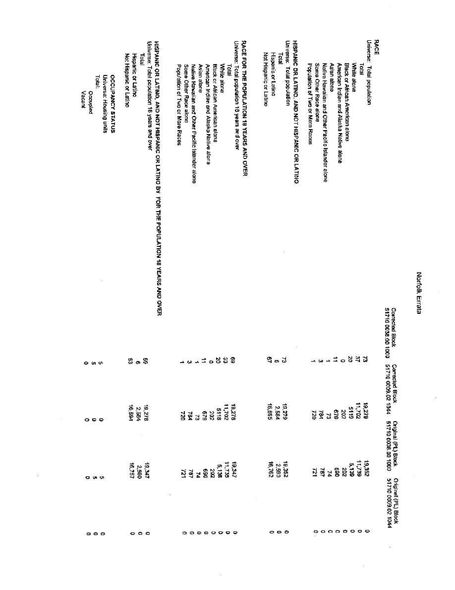
2010 Census
Advance Group Quarters Summary File
Data Note 1
Geocoding errors can occur when a living quarter such as a house, apartment, or military vessel, is placed
in an incorrect location. As a result of a geocoding error, the Census Bureau is providing revised population
counts for two 2010 Census tabulation blocks in Norfolk, Virginia. The geocoding error placed ships
ported at the Norfolk Naval Station incorrectly in block 1000, census tract 38, Norfolk city. These ships
correctly belong in block 1044, census tract 9.02, Norfolk city.
The corrected and original population counts are:
Population in corrected
block 1000,
census tract 38
Population in corrected
block 1044,
census tract 9.02
Population in original
block 1000,
census tract 38
Population in original
block 1044,
census tract 9.02
73
19,279
19,352
0
For additional information, see <www.census.gov/rdo/pdf/VA_errata.pdf>.
This note is applicable to 2010 Census data products containing data at the census tract or block levels,
including:
• Redistricting Data (Public Law 94-171) Summary File
• Advance Group Quarters Summary File
• Summary File 1
• Summary File 2
• Congressional District Summary File (113th Congress) and subsequent releases
• State Legislative District Summary File and subsequent releases
April 2011
U.S. Census Bureau, 2010 Census

Page | 74
A
PPENDIX
B:
GIS
C
ALCULATIONS
These are the calculations used to perform the population vulnerability analysis within ArcGIS. The
analysis for quantifying the vulnerable population in Hampton Roads to various categories of storm
surge required, first, calculating how much of each census block was within each category of storm
surge, and second, calculating the population within each block within the vulnerable areas. The
datasets used for this analysis were the 2010 Census Blocks (boundary files) and Redistricting Data
(demographic data).
Extracting vulnerable areas from Census blocks
Step 1: Overlay storm surge areas on blocks.
Step 2: Using the Clip tool, extract the areas of the census blocks within each storm surge zone (this
creates four new datasets).
Calculating storm surge areas within blocks
Step 3: Create a new table containing the following fields for each census block: ID number, county
FIP code, total population, area (acres), category 1 area (acres), category 2 area (acres), category 3
area (acres), and category 4 area (acres). Name the category area categories Cat1_Acres,
Cat2_Acres, etc.
Step 4: Open the attribute table of the clipped dataset.
Step 5: Create a new field, Area_Acres (double).
Step 6: Using the Calculate Geometry function, calculate the area of the clipped blocks in acres
(U.S.).
Step 7: Join the clipped dataset (as a table) to the new table.
Step 8: Using the Field Calculator, copy the values for storm surge areas to the table using this
formula:
Cat1_Acres = area1a
Dim area1a as double
If [HRblocks2010_sp_2.Area_Acres] > 0 Then
area1a = [HRblocks2010_sp_2.Area_Acres]
elseif [HRblocks2010_sp_2.Area_Acres] = "<Null>" Then
area1a = 0

Page | 75
end if
Note: HRblocks2010_sp_2 is the name of the census blocks shapefile or feature class that has been
clipped to the category 2 storm surge zone.
Step 9: Repeat Steps 4-8 for each storm surge/census feature class or shapefile.
Calculating the ratio of storm surge areas to total areas within blocks
Step 10: In the table, create four new fields (double): Cat1_Ratio, Cat2_Ratio, Cat3_Ratio, and
Cat4_Ratio.
Step 11: Using the Field Calculator, calculate the ratio of storm surge area to total area for each
block using the following formula:
Cat3_Ratio =
[Cat3_Acres] / [Area_Acres]
Note: Cat3_Acres is the area of a block that is within the category 3 storm surge zone, and
Area_Acres is the total area of a block.
Step 12: Repeat Step 11 for each storm surge area.
Calculating the vulnerable population within each block for each category of storm surge
Step 13: In the table, create four new fields (long integer): Cat1_POP, Cat2_POP, Cat3_POP, and
Cat4_POP.
Step 14: Using the Field Calculator, calculator the vulnerable population for each block using the
following formula:
Cat1_POP =
[Cat1_Ratio] * [POP100]
Note: POP100 is the total population of the census block.

Page | 76
A
PPENDIX
C:
S
AMPLE
P
RESENTATION
The following attachment contains slides from a presentation given to the members of the
Unitarian Church of Norfolk on June 25, 2010. Mr. Benjamin McFarlane and Mr. John Carlock were
invited to speak to the congregation about the issues of flooding and sea level rise. The event is
described in greater detail in the Public Outreach section of the main report (page 58).
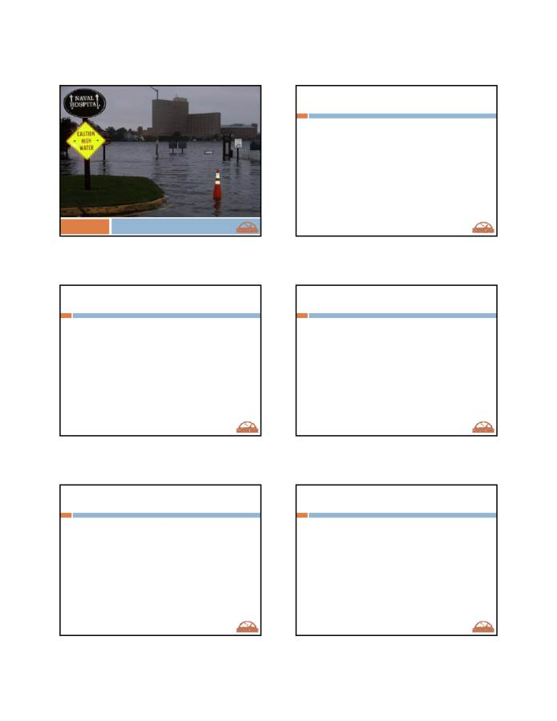
5/25/2011
1
CLIMATE CHANGE, SEA LEVEL
RISE, AND HAMPTON ROADS
John M. Carlock, AICP
Deputy Executive Director, HRPDC
Presentation to the Unitarian Church of Norfolk
Image courtesy of Dr. David Powell – Portsmouth, VA
June 25, 2010
Benjamin J. McFarlane
Environmental Planner, HRPDC
What is the HRPDC?
1 of 21 Regional Planning Agencies in Virginia
State enabled – locally created
Commission: 45 members (25 elected, 16 CAO)
Staff – Executive Director & 45 staff
Technical Ad isor Committees
Technical Advisory Committees
Areas – Economics, Housing, Emergency Management,
Environmental, Planning, Transportation
Budget - $11,000,000 +/-
Functions – Policy and Technical Analysis, Planning and
Engineering Studies, Cooperative Problem Solving,
Coordination
Key HRPDC Issues for CY 2010
Water Quality Management including SSO
Requirements, Stormwater Programs, Chesapeake Bay
Program, TMDLs
Climate Change & Sea Level Rise
Catastrophic Planning
p
g
Comprehensive Education Programs
Security and Emergency Management
Transportation Project Prioritization
Long Range Transportation Plan
Regional &/or Local Water Supply Plans
Funding – Infrastructure and Programs
HRPDC Climate Change Project
3-year grant project with the Virginia Coastal Zone
Management Program
Year 1: Research on Mid-Atlantic climate change
impacts, begin stakeholder process
Y
2 E t bli h
t f
i
l li
t h
Year 2: Establishment of regional climate change
working group, assessment of potential impacts and
development of policy recommendations through
stakeholder process
Year 3: Continued assessment of infrastructure and
environmental impacts and completion of the regional
framework for adaptation to climate change
Climate Change in Hampton Roads
Temperature Rise
3.1° C (5.6 ° F) average warming for Virginia by 2100
Precipitation increase
Precipitation increase
11% increase by 2100
Shift in when precipitation occurs
Sea Level Rise: Broad range of forecasts
Changing Flood Threat
Sea Level Rise
Forecasting sea level rise rates is a difficult
challenge
Unknown future greenhouse gas emission rates
Incomplete understanding of ice melt dynamics
Projections are typically given as ranges by 2100
IPCC 2007 Low Emission Scenario: 0.6-1.3 feet
IPCC 2007 Higher Emission Scenario: 0.7-1.6 feet
IPCC 2007 Even Higher Emission Scenario: 0.8-1.9
feet
More recent projections: 3-4 feet
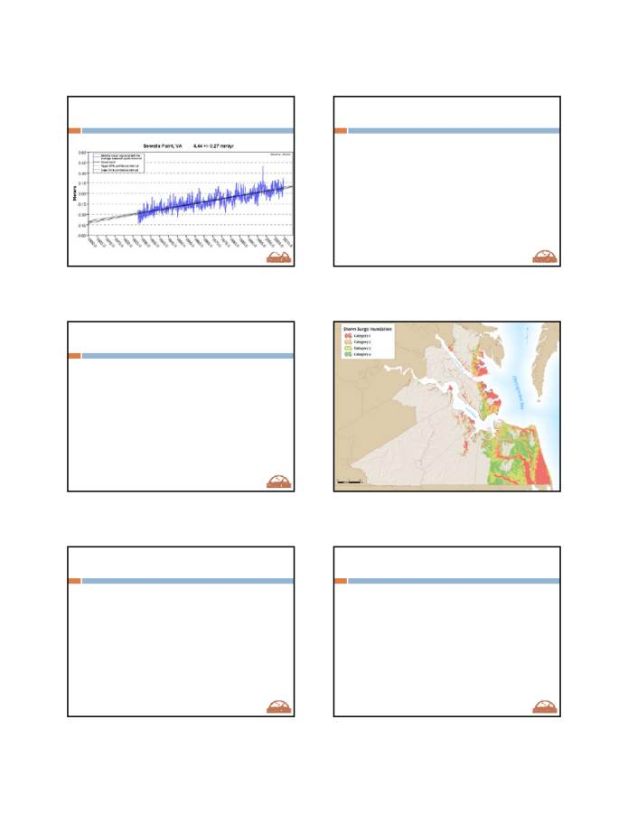
5/25/2011
2
Historic Sea Level Rise
Changing Flood Threat
Land Subsidence
Combination of factors contribute to land subsidence in
Hampton Roads
Located on a passive continental margin
Withdrawal of groundwater for drinking water and other
Withdrawal of groundwater for drinking water and other
uses
Rate of land subsidence varies across Hampton Roads
2mm per year is an average rate of subsidence for the
region
At the Sewell’s Point tide gage subsidence likely accounts for
1/3 to 1/2 of the total sea level rise for the period of
record
Impacts of Sea Level Rise in
Hampton Roads
Major Challenges for Hampton Roads
Flood threat will increase over time:
Increased frequency and severity of flooding from small
storm events
Increased risk of catastrophic flooding from large storm
events
Infrastructure impacts due to sea level rise and
associated increase in storm surge
Flooding and loss of wetlands due to sea level rise
Source: Virginia Department of Emergency Management
Responding to Climate Change
Two responses:
Mitigation
Adaptation
Mitigation reduces the extent of climate change
Adaptation reduces the impacts of climate change
Responding to Climate Change:
Mitigation
Mitigation can reduce the rate or extent of climate
change and focus on reducing emissions
Proactive rather than reactive
Proactive rather than reactive
Achieved through technology changes or policy
decisions
5/25/2011
3
Responding to Climate Change:
Adaptation
Adaptation can reduce the impacts of climate
change on human and natural systems
Three categories:
Three categories:
Protection
Accommodation
Retreat
HRPDC Ongoing Efforts and Next
Steps
Mitigation efforts:
Regional greenhouse gas emissions inventory
Energy efficiency efforts
Adaptation efforts:
Data and information acquisition
Vulnerability analyses
Planning efforts:
Regional climate change working group
Development of Regional Framework for Mitigation
and Adaptation to Climate Change
Conclusion
Climate change is a very complicated and daunting
problem – institutionally, scientifically, and
physically
Planning for climate change now can help reduce
costs and impacts in the future
Thank you
Questions?
Contact:
Benjamin McFarlane
bmcfarlane@hrpdcva.gov
Document Outline